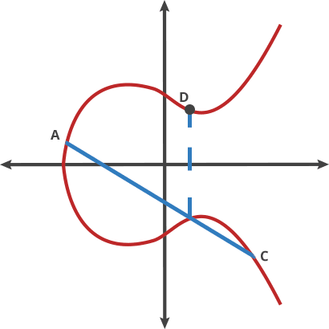
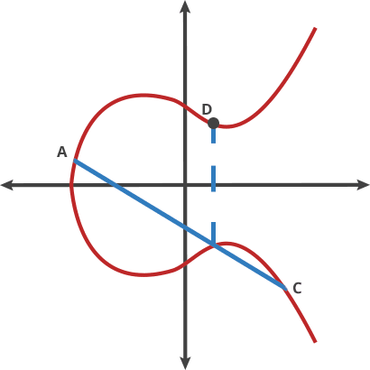
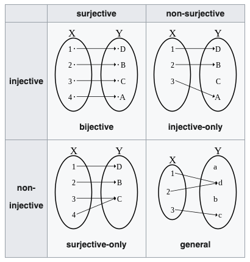
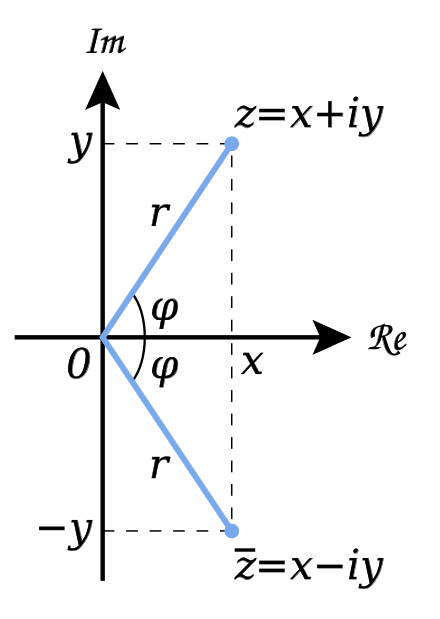
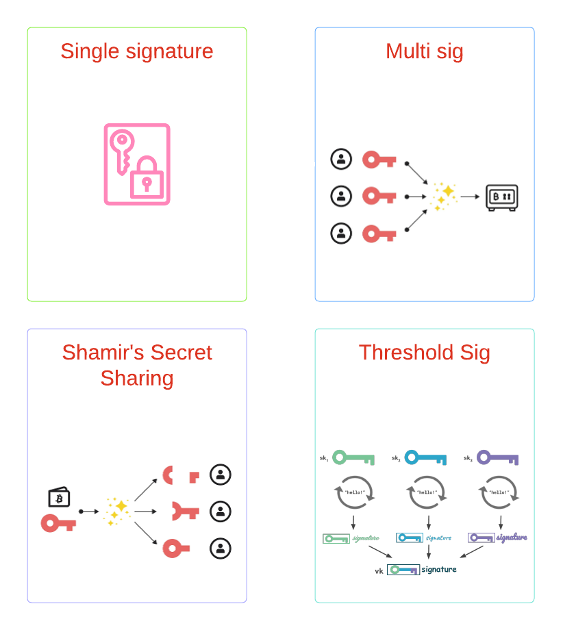
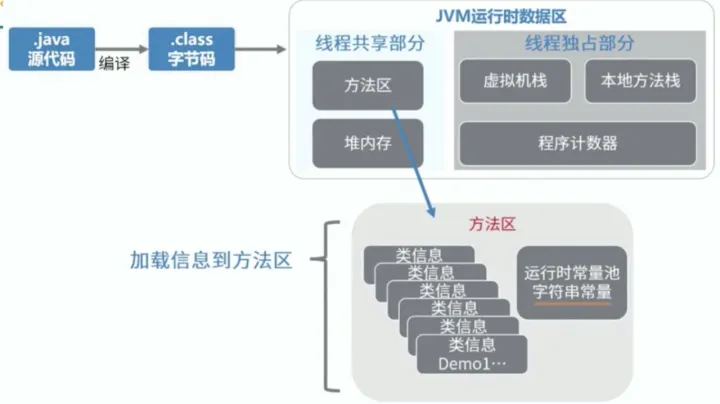
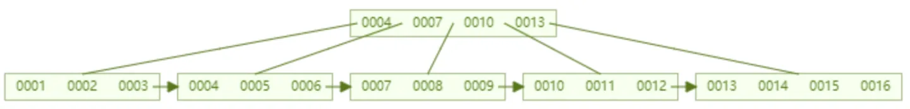

Cryptography
Trap door Functions
A trapdoor function is a function that is easy to compute in one direction, yet difficult to compute in the opposite direction (finding its inverse) without special information.
Why modulo
make the compute irreversible.
for example:
\( 5\times x=500 \hspace{1cm} \rightarrow \hspace{1cm} x=500 \div 5=100 \)
\( 5 \times x \pmod{7}=3 \), x may equal 2, may equal 16，may equal 100 ...
identity element of operation
In mathematics, an identity element(恒等元), aka a neutral element,is an element that when combined with another element using a particular operation, leaves the second element unchanged.
For example, in addition, the identity element is zero.In multiplication, the identity element is one.
Inverse
In mathematics, the term "inverse" refers to an element that,when combined with another element with a particular operation, yields the identity element for that operation.
For example, the inverse of the number 2 with respect to addition is -2, because \( 2+(-2)=0 \),the inverse of the number 2 with respect to multiplication is \( \frac{1}{2} \), because \( 2\times \frac{1}{2}=1 \).In modular arithemetic, the inverse of an element a about modulus m is b, when \( a\times b \equiv 1 \pmod{m} \), eg: \( 2 \times 4 \equiv 1 \pmod{7} \), so the inverse of 2 abount modulus 7 is 4.
bijective
In mathematics,a function is said to be bijective if it is both injective and surjective.An injective funtion maps each elemtnt of the domain to a unique element of the range,meaning no two distinct elements in the domain are mapped to the element in the range. A sruijective funtion, on the other hand,maps each element of the range to at least one element in the domain, meaning every element in the range is mapped to by at least one element in the domain.
A bijective function satisfies both of these properties.Bejective functions are sometimes refered to as one-to-one corresondences,as they establish a unique pairing between the elements of the domain and the range.
References
RSA
RSA (Rivest–Shamir–Adleman), is a public-key cryptography.
RSA trap door
In the case of RSA, the easy algorithm multiplies two prime numbers. If multiplication is the easy algorithm, its difficult pair algorithm is factoring the product of the multiplication into its two component primes.
RSA max
In RSA, this maximum value (call it max) is obtained by multiplying two random prime numbers. The public and private keys are two specially chosen numbers that are greater than zero and less than the maximum value, call them pub and priv.
RSA encrypt
To encrypt a number you multiply it by itself pub times, making sure to wrap around when you hit the maximum.
RSA decrypt
To decrypt a message, you multiply it by itself priv times and you get back to the original number.
Derivation process
- $ p,q $ : distinct equal-length primes. Thus p will not divide q-1 and q will not divide p-1, which ensures that $gcd(N, \phi(N))=1 $
- $ n=p\times q $ : n is RSA max.
- $\lambda(n)=lcm(p-1,q-1) $
- choose e: $ 2< e < \lambda(n), gcd(e,\lambda(n))=1 $
- determine d: $d \equiv e^{-1} \pmod{\lambda(n)} $
encrypt: $ E_m= m^{e} \pmod{n} $ \
and encryptedMsg $ E(m) $ is decrypted via
$ D_m= (E_m)^{d} \pmod{n} $ \
$ D_m=(m^{e})^{d} \equiv m^{ed} \equiv m^{ed \bmod ord_n(m)} \equiv m^{ed \bmod \lambda(n)} \equiv m^1 \equiv m \pmod{n} $ \
RSA is not an ideal system for the future of cryptography
The gap between the difficulty of factoring large numbers and multiplying large numbers is shrinking as the number (i.e. the key's bit length) gets larger. As the resources available to decrypt numbers increase, the size of the keys need to grow even faster. This is not a sustainable situation for mobile and low-powered devices that have limited computational power. The gap between factoring and multiplying is not sustainable in the long term.
RSA security
RSA security can be classify into 3 parts, each part is corresponding to n,e,m, (n,e) is the public key, m is the msg need to be encrypted.
- RSA n security: $gcd(n,\phi(n))=1 $, this condition ensure that $ (p \nmid q-1) and (q \nmid p-1) $, this help maintain the difficulty of factoring the modulus $n=pq $.
- RSA e security: $gcd(e, \phi(n))=1 $, ensure the map $x \mapsto x^e $ is a permutation over $Z_n^*$, if with the condition n is square-free, then the map $x \mapsto x^e $ is a permutation over $Z_n$.
- RSA m security: $gcd(m, n)=1$, there is a negligible possibility will leak the factorization of n. When msg m is not coprime to n, the encrypted result $m^e \pmod{n} $ is not coprime to n, then the factorization will be leaked ($factor=gcd(m^e \pmod{n}, n) $). The possibility $P=1-\frac{\phi(n)}{n} $， if n is not generated with bias, the possibility is trivial.
RSA e security
RSA public key often denoted as $ (N,e) $, N is the max value, e is exponent.
It is necessary to ensure that the public key operation $[(msg)^e \bmod{n}] $ is a permutation over $Z_N $: that is raising to the power of e modulo N must be bijective, or equivalently, every integer between $[0, N-1] $ must hava an $ e_{th} $ root modulo N.
$$ i^e \equiv y_i \bmod{N}, \quad i \in [0,N-1], \quad y_i \in [0, N-1] $$
If the map funtion is not a permutation over $Z_N$, then some element in $Z_N$ after map will get the same value (not injective), this will cause information loss.
$x \mapsto x^e \pmod{N} $ permutation
$x \mapsto x^e \pmod{N} $ defines a permutation over $Z_N^$ if and only if e is relative to $\phi(N) $ $$L_{permZ_N^}={(N,e)|N,e>0 \ and \ gcd(e,\phi(N))=1} $$
proof:
- Suppose $gcd(e,\phi(N))=1 $, Then let $d=e^{-1} \pmod{\phi(N)} $
The map funtion is $x \mapsto x^e \pmod{n} $, and the inverse map is $y \mapsto y^d \pmod{n} $
Thus $de=1+k\phi(N) $ for some integer k.
$\forall x \in Z_N^*:$
$(x^e)^d \pmod{N} \equiv x^{1+k\phi(N)} \pmod{N} \equiv x \times (x^{\phi(N)})^k \pmod{N} \equiv x \pmod{N} $
Because x map to y, then y map to x, use the "same" funtion(exponent modulo), so the map function is a permutation. - Suppose $gcd(e, \phi(N))= d \not=1 $, Then $d| \phi(N) $
so exists a element $x \not=1 $ whose multiplicative order is d, $ x^d \equiv 1 \pmod{N} $
$x^e \pmod{N} \equiv (x^d)^{\frac{e}{d}} \pmod{N} \equiv 1 \pmod{N} $
so when $ gcd(e, \phi(N)) \not=1, x^e \equiv 1 \pmod{N}, x\in Z_N^* $
Furthermore, if N is also square free, $x \mapsto x^e \pmod{N} $ is a permuation over $Z_N$.
A number N is square free if it can be written as $N = p_1p_2 \cdots p_r$ for distinct prime numbers
$p_i$ (N is not square free if it is divisible by $p^2$, where p is some prime.)
In https://eprint.iacr.org/2018/057.pdf Theorem3.3, Lemma A.6, The author introduce a method that check N is not divisible by all the primes less than $\alpha $, The prof can provide statistical soundness with error $Probability= \frac{1}{\alpha^m} <= 2^{-\mathcal{k}} $
RSA n security
$n=pq \ \phi(n)=\phi(p)\phi(q)=(p-1)(q-1) \ d \equiv e^{-1} \pmod{\phi(n)} \ $ If $(p | q-1) or (q | p-1) $, then $gcd(n, \phi(n))=d > 1$, it would imply that p and (q-1) share a common factor. In such a case ,the Euler's totient funtion value $\phi(n) $ would become more predictable, which could weaken the security of the RSA algorithm.
References
- Efficient Noninteractive Certification of RSA Moduli and Beyond
- A Computational Introduction to Number Theory and Algebra
- wiki: RSA key generation
- Certifying RSA Public Keys with an Efficient NIZK
ECC
ECC(Elliptic Curve Cryptography)
ECC equation
The equation of an elliptic curve looks like this:
\(
y^2=(x^3 +a*x +b) \pmod{p}
\)

ECC point add
- If the two points being added have different x-coordinates, then the line passing through the two points is used to find the point of intersection, which is then reflected over the x-axis to get the sum of the two points.
- If the two points being added are the same point, then the tangent line to the curve at that point is used to find the third point of intersection, which is then reflected over the x-axis to get the sum of the two points.
- If the two points being added have the same x-coordinate (symmetrical) but different y-coordinates, then the sum of the two points is the point at infinity.
- If one of the points being added is the point at infinity, then the sum of the two points is the other point being added.
 


why chosen symmetrical point:
In ECC, when adding two points on a curve, it is possible that the result of the additon will be a point at infinity.When this happens, the result is still considered valid, but it is not useful for cryptographic operations. To avoid this situation,ECC use a symmetrical point for each point on the curve,such that when two points are added together, the resulting point is guaranteed to be on the curve. This is essential for the security and efficiently of ECC-based cryptographic protocols.
The ECC used for cryptography
curve order:
Rather than allow any value for the points on the curve, we restrict ourselves to whole numbers in a fixed range. In ECC, the size of the elliptic curve is determined by the number of points on the curve,which is denoted by a parameter called the "order" of the curve.The order of an elliptic curve is always a positive integer, and it represents the number of points on the curve, including the point at infinity.
order must be a large prime number:
To ensure the security of ECC-based cryptographic protocols, the order of the curve must be a large prime number. This is because the security of ECC depends on the difficulty of solving the elliptic curve discreate logarithm problem (ECDLP, the trap door function of ECC),which is the problem of finding the intger k such that \( Q=kP \), where P and Q are points on the curve, and k is a secret integer.The larger the order of the curve, the more difficult it is to solve the ECDLP.
If the order of the curve is not a prime number, then it can be factored into smaller factors, which can be used to attack the curve and compromise the security of ECC-based cryptographic protocols.
The necessary and sufficient condition for the existence of a multiplicative inverse of b is that b is coprime with the modulus m.Let c be the inverse of b about modulus m,i.e., \( b*c\equiv 1 \pmod{m} \).
Explanation: \( a/b=a/b\times1=(a/b)(b\times c)=a\times c \pmod{m} \)
ECC Encryption / Decryption In HTTPS
\( Q_a=d_A*G \)
encrypt:
generate random secret number: \( k \)
calc symmetric encryption key: \( sk = k*Q_a \)
calc the random point on curve: \( R=k*G \)
export \( (R, encryptedMsg) \)
decrypt:
\( sk=R*d_A \), then use sk to decrypt the encryptedMsg.
proof:
\( sk=k*Q_a=k*d_A*G=R*d_A \)
How to calc the public key of ECC
The double-and-add method is an efficient algorithm for computing scalar multiplication on an elliptic curve,and is commonly used for calculating the public key in elliptic curve cryptography.The algorithm proceeds as follows:
- Initialize a point Q to the point at infinity on the curve.
- Convert the scalar k to its binary representation.
- For each bit i in the binary representation of k, starting from the most significant bit:
- Double the current value of Q.
- if the i-th bit of k is 1, add P to the current value of Q.
- The final value of Q is the result of the scalar multiplication of P by k.
ECDSA (Elliptic Curve Digital Signature Algorithm)
Signing the message:
- Hash the message usinga cryptographic function to generate a fixed-length digest, denote as \(h\).
- Generate a random number \(k\), which is kept secret.
- Calculate a point R on the elliptic curve: \(R=k*G\).
- Calculate a scalar: \( s=k^{-1}(h+d_A*r) \), r is the x coordinate of R.
- The signature is the pair: \((r,s)\).
Verifying the signature:
- Hash the message using the same cryptographic hash function used to sign the message, denote as \(h\).
- Calculate a Point \(P=s^{-1}*h*G+ s^{-1}*r*Q_a \)
- If the x coordinate of P and R is equal, that means the signature is valid.
Proof:
we have: \( P=s^{-1}*h*G + s^{-1}*R*Q_a \)
but \( Q_a=d_A*G \)
so \( P=s^{-1}*h*G + s^{-1}*r*d_A*G= s^{-1}(h+d_A*r)*G \)
But the x coordinate of P must match R and r is the x coordinate of k*G, which means that:
\( k*G=s^{-1}(h+d_A*r)*G \)
we can simplify by removing G which gives us:
\( k=s^{-1}(h+d_A*r) \)
by inverting k and S, we get:
\( s=k^{-1}(h+d_A*r) \)
and that is the equation used to generate the signature. so it matchs.
Why Ethereum use signature(r,s,v)
Ethereum add additional v to recovery a unique public key.
In the verifying step, we have: \(P=s^{-1}*h*G + s^{-1}*r*Q_a \)
as P's x coordinate must match R : \( R=s^{-1}*h*G + s^{-1}*r*Q_a \)
\( s*R= h*G + r*Q_a \)
\( s*R-h*G=r*Q_a \)
\( sr^{-1}*R - hr^{-1}*G=Q_a \) \
the equation of seckp256k1 is: \( y^2=x^3+7 \), so R may have two points which was symmetrical of x-axis.Thus, Ethereum use v to define use positive R or negative R.It is a well-known fact that for every valid signature (r,s), the pair (r,-s) is also a valid signature.
The importance of random k
Assume you have two signatures,both with the same k,then they will both have the same r value, and it means that you can calculate k using two s signatures with hash h and h' respectively:
\( s-s'=k^{-1}(h+d_A*r) - k^{-1}(h'+d_A*r)= k^{-1}(h+d_A*r -h'-d_A*r)= k^{-1}(h-h') \)
\( k=\frac{h-h'}{s-s'} \)
\( d_A=\frac{s*k-h}{r} \)
Sony PS3's ECDSA private key was leak by them same random k.This is also the reason why it is impossible to have a custom firmware above 3.56, simply because since the 3.56 version, Sony have fixed their ECDSA algorithm implementation and used new keys for which it is now impossible to find the private key.
The cost of rho method
地球上沙子的数量：
地球半径约为6400km，用球的体积公式算下来，地球体积大约是1.098×10^12立方千米，合1.098×10^30 立方毫米。假设整个地球都是沙子，一粒沙子的大小是1立方毫米，那么地球约有1.098×10^30个沙子。
使用 rho 破解 secp256k1 需要的计算次数约为 \( 2^{128} \approx 3.4 \times 10^{38} \),这个破解难度相当于假设你有1亿台机器并发去做数沙子的任务，需要把地球上的沙子数清楚。
References
- Understanding-how-ECDSA-protects-your-data
- noble-secp256k1
- ecc-encryption-decryption
- signature recid
- signature recid: geth implementation
Homomorphic Encryption
Homomorphic encryption is a form of encryption that allows computations to be performed directly on ciphertext, without the need to first decrypt it. In other words, homomorphic encryption enables the computation of a funtion on encrypted data suce that the result of the computation is the encrypted form, which an then be decrypted to obtain the final reault.
There are to main types of homomorphic encryption:full homomorphic encryption(FHE) and partially homomorphic encryption(PHE). FHE enables arbitrary computations to be performed on ciphertexts, while PHE only allows a restricted set of computations to be performed, such as addition or multiplication.
Prerequisite
Euler`s totient function
Euler's totient function, denoted as \( \phi(n) \), is a mathematical funtion that counts the number of positive integers less than or equal to n that are relatively prime to n, i.e.,they have no common factors other than 1.(greatest common divisor: gcd(n,k)=1)
For example, if n=10, the integers less than or equal to 10 thar are relatively prime to 10 are 1,3,7,and 9.Therefor,\( \phi(10)=4 \).
Carmichael's function
Carmicheal's function, denoted as \( \lambda(n) \) is a mathematical funtion that generalizes Euler's totient funtion \( \phi(n) \) and computes the smallest positive integer m such that \( a^m\equiv 1\pmod{n} \) for all integers a that are relatively prime to n.
For example: \( \lambda(8)=2 \), because {1,3,5,7} are coprime to 8, \( (1,3,5,7)^2\equiv 1\pmod{8}\)
Carmichael's theorem
\( | \mathbb{Z} |^*_{n^2}= \phi(n^2)=n\phi(n) \),
and that for any: \( \omega \in \mathbb{Z}^*_{n^2} \)
\[ \begin{cases} \omega^{\lambda} \equiv 1 \bmod n, \\ \omega^{n\lambda} \equiv 1 \bmod n^2, \\ \end{cases} \]
we will adapt \( \lambda \) instead of \( \lambda(n) \) for visual comfort.
Composite number
A composite number(合数) is a positive integer that can be formed by multiplying two smaller positive integers.Equivalently,it is a positive integer that has at least one divisor other than 1 and itself. Every positive integer is composite, prime or the unit 1.
Deciding Composite Residuosity(Trap door function of Paillier)
The decisional composite residuosity assumption(DCRA) states that given a composite n and an integer z, it is hard to decide whether z is an n-th residue modulo \(n^2\). i.e. whether there exists a y such that \[ z\equiv y^n \bmod(n^2) \]
- The had problem: Deciding n-th composite residuosity!
\( z\equiv y^n \pmod{n^2} \) - The set of n-th residues is a multiplicative subgroup of \( Z^*_{n^2} \) of order
\( \phi(n) \) - Each n-th residue z has exactly n roots of degree n,among which examply one is strictly smaller that n, namely
\( r \equiv \sqrt[n]{z} \pmod{n}, r \in Z^*_n \) - The n-th roots of unity are the numbers of the form
\( (1+n)^m = 1+mn \pmod{n^2}, m \in Z_n \) - Generate the multiplicative subgroup \( Z^*_{n^2} \) as
\( Z_n \times Z^*_n \)
Paillier homomorphic encryption
Setup:
- Chose two large prime numbers \({\color{Red}p}\) and \({\color{Red}q}\) and form the modulus
\(n=pq\) - Euler's totient funtion gives the number of relative prime elements in \(Z^*_n\)
\( \phi(n)=(p-1)(q-1) \) - The number of relative prime elements in \(Z^*_{n^2}\) is
\( \phi(n^2)=n\phi(n) \) - The partial private key \({\color{Red}\lambda}\) is determined by Carmichael's funtion
\( \lambda(n)=lcm(p-1,q-1) \), least common multiple(最小公倍数). - the order of g is a nonzero multiple of n
Paillier Encryption:
\[ (m,r) \rightarrow g^m \cdot r^n \pmod{n^2} =c \] m: plaintext message, r: random number for semantic security
Paillier Decryptin:
\[ m=\frac{L(c^\lambda \bmod n^2 )}{ L(g^\lambda \bmod n^2)} \bmod n \] \[ L(x)=\frac{x-1}{n} \]
Proof:
\( DEC(c)=\frac{L(c^\lambda \bmod n^2 )}{ L(g^\lambda \bmod n^2)} \bmod n \)
\( c^\lambda=(g^m \cdot r^n)^\lambda= g^{m\lambda} \cdot r^{n\lambda} \)
accoording to Carmichael's theorem, we have:
\[ r^{n\lambda}\equiv 1 \bmod n^2 \]
\( DEC(c)=\frac{L(g^{m\lambda} \bmod n^2)}{L(g^\lambda \bmod n^2)} \bmod n \)
\( \because g^\lambda \equiv 1 \pmod{n} \)
\( \therefore g^\lambda = 1+kn \)
\( g^{m\lambda} \equiv (1+kn)^m \pmod{n^2} \equiv 1+knm \pmod{n^2} \)
\( DEC(c)= \frac{km}{k} =m \)
Additive Homomorphic Properties
\( c_1=g^{m_1}r_1^n \)
\( c_2=g^{m_2}r_2^n \)
\( c_1 c_2=g^{m_1+m_2}(r_1 r_2)^n \)
Encrypted message multiple plain number
\( c=g^m r^n \)
\( c^k=g^{km}r^{kn} \)
References
- Public-Key Cryptosystems Based on Composite Degree Residuosity Classes
- The Paillier Cryptomsysem
- 长安链同态加密方案设计文档
- https://blog.csdn.net/caorui_nk/article/details/83305709#_18
- Composite number wiki
- Decisional composite residuosity assumption wiki
- group theory
- euler totient caculator
- Paillier cryptosystem wiki
- 二项式定理
- 欧拉定理
- 二项式定理证明Paillier加密
- Paillier 的高效实现
通过二项式证明 Paillier 同态加密
一般地，对于一个定理，通常的学习方法是先知道了结论，然后通过某些数学公式推导出结论，这里把这种方法称为逆向学习法。本文试图通过二项式定理从正向的思考方式证明 Paillier 同态加密。
二项式定理
两个数的整数次之幂诸如 \((x+y)^n\) 可以展开为多个形如 \(ax^by^c\) 的项的和，其中 b,c 均为非负整数，且\(b+c=n\), a 为二项式的系数。高中数学里面的 平方和公式 就是二项式定理的一个特例，\((a+b)^2=a^2+b^2+2ab\)
定理的陈述
\( (x+y)^n= \binom{n}{0}x^ny^0 + \binom{n}{1}x^{n-1}y^1 + \binom{n}{2}x^{n-2}y^2 +\cdots+ \binom{n}{n-1}x^1y^{n-1} + \binom{n}{n}x^0y^n \)
其中 \( \binom{n}{k} \) 被称为二项式系数，其等于 \( \frac{n!}{k!(n-k)!} \)
二项式定理的一个变形是将 y=1 代入公式，这样二项式公式中就只涉及一个变量 x :
\( (1+x)^n=\binom{n}{0}x^0 + \binom{n}{1}x^1 + \binom{n}{2}x^2 +\cdots+ \binom{n}{n-1}x^{n-1} + \binom{n}{n}x^n \)
定理的证明
二项式系数 \( \binom{n}{k}=\frac{n!}{k!(n-k)!} \) 就是高中数学的【排列与组合】章节中的组合数公式。
\( (x+y)^n= (x+y)(x+y)(x+y) \cdots (x+y) \) , 每一个\( (x+y) \) 称为乘法因子
二项式的每一个项为 \( ax^ky^{n-k} \)，我们如果在n个乘法因子中选择了 k 个 x ，再从剩下的 (n-k) 个乘法因子选择 (n-b)个 y ,便能得到一组 \( x^ky^{n-k} \), 而这样的选法总共有 \( \binom{n}{k} \) 种。
对数和离散对数
对数
如果\( b^x=y \)，那么 x 叫做以 b 为底 y 的对数， 记做 \( x=\log_b y \)
离散对数
如果 \( b^x \equiv y \pmod n \), 离散对数问题就是在已知 b,y的情况下求 x 的过程。 离散对数问题一般被认为很难求解，特别是当 'n' 是一个很大的质数或者当 b 是整数模n群的生成元。
二项式可以很容易地求解求解某些离散对数
根据二项式定理，我们有：
\[ (1+n)^x= \sum_{k=0}^x \binom{x}{k}n^k \]
将其转化成模\( n^2 \)的表达式：
\( (1+n)^x \equiv \binom{x}{0}n^0 + \binom{x}{1}n + \binom{x}{2}n^2 + \cdots + \binom{x}{x}n^x \equiv 1+nx \pmod {n^2} \)
两边变形可得：
\( x \equiv \frac{(1+n)^x-1}{n} \pmod {n^2} \)
这意味着在已知形如\( (1+kn)^x \)的数的情况下，我们可以轻松地计算在模 \(n^2\)意义下关于\( (1+kn)\) 的对数, 计算方法就是通过函数：
\( L=\frac{x-1}{n} \) , 这里的 x 是\( (1+kn)^x \)的整体替换
整数模n乘法群
在同余理论中，模n的互质同余类构成一个乘法群，称为 整数模n乘法群。 这个群是数论的基石，在密码学、整数分解和素性测试中均有运用。
整数模n乘法群用符号表示为 \(Z_n^*\), 一般地， \(Z_n\) 表示整数模n加法群。
欧拉函数和卡迈克函数
欧拉函数表示为 \( \phi(n) \) 或者 \( \varphi(n) \), 欧拉函数计算小于n且和n互质的正整数的个数，其实也就是计算整数模n乘法群的阶。（群的阶order,指的是群中元素的个数）。
卡迈克函数表示为 \( \lambda(n) \), 卡迈克函数计算使得所有和n互质的所有正整数 a （需要满足所有的a）, 满足 \( a^m \equiv 1 \pmod n \) 的最小的正整数 m。Carmichael funtion有一个准确描述的名字叫【最小通用指数函数】(least-universal-exponent-funtion); 在代数术语中，\( \lambda(n) \)是整数模n乘法群的指数。
同态加密/解密
初始设置：
- 选择两个大质数 p,q
- 计算合数 n=pq
- 计算最小通用指数 \( \lambda(n)=lcm(p-1, q-1) \)
加密:
加密的过程就是就是生成乘法子群的过程 \( Z_n \times Z_n^* \rightarrow Z_{n^2}^* \)
\[ (m,r) \rightarrow g^m \cdot r^n \pmod{n^2} = c \]
m: plaintext message
r: random number for \( Z_n^* \)
c: ciphertext
解密:
\[ m=\frac{L(c^{\lambda} \bmod{n^2})}{L(g^{\lambda} \bmod{n^2})} \bmod{n} \] \[ L(x)=\frac{x-1}{n} \]
证明:
\( c^{\lambda} \bmod{n^2}= (g^m r^n)^{\lambda} \bmod{n^2}= g^{m\lambda}r^{n\lambda} \bmod{n^2} \)
\( \because r^{n\lambda} \equiv 1 \pmod{n^2} \)
\( \therefore c^{\lambda}=g^{m\lambda} \bmod{n^2} \)
\( \because g^{\lambda} \equiv 1 \pmod{n} \quad \therefore g^{\lambda}=1+kn \)
\( \therefore c^{\lambda}=g^{m\lambda} \bmod{n^2}= (1+kn)^m \bmod{n^2}=1+knm \bmod{n^2} \)
\( Dec=\frac{knm}{kn} \bmod{n}= m \bmod{n}=m \)
证明加密函数双射
映射函数 $\varepsilon_g: Z_n \times Z_n^\mapsto Z_{n^2}^, \varepsilon_g(x,y)= g^x \times y^n \pmod{n^2} $
引理：若 g 的阶 $ord_{n^2}(g) $ 是n的非零整数倍，则加密函数 $\varepsilon_g $ 是双射。
证明： 由于 $Z_n \times Z_n^$ 的元素个数和 $Z_{n^2}^ $ 一样， 只需要证明单射。
假设有 $c_1 = g^{m_1} r_1^n \pmod{n^2}, c_2=g^{m_2} r_2^n \pmod{n^2} $
如果 $c_1 = c_2$, 两式相除有
$g^{m_1-m_2} \cdot (r_1 r_2^{-1})^n \equiv 1 \pmod{n^2} $ ,两边同求取幂有
$g^{\lambda(m_1-m_2)} \cdot (r_1 r_2^{-1})^{\lambda n} \equiv g^{\lambda(m_1-m_2)} \equiv 1 \pmod{n^2} $
从而有 $ord_{n^2}(g) | \lambda(m_1-m_2) $
又 $n|ord_{n^2}(g) \Rightarrow n|\lambda(m_1-m_2) $
又因为 $gcd(\lambda, n)=1 $, 所以 $n | (m_1-m_2) $
因此在 $m_1,m_2 \in Z_n $的 意义下， $m_1=m_2$
得证
References
- The Paillier Cryptomsysem
- wiki:二项式定理
- cdcq: 二项式证明Paillier
- 陈：整数模n乘法群
- 李杰：双射证明同态
- 孙晓军：同态原理，实现，应用
- wiki: Carmichael_funciton
- OI wiki:中国剩余定理CRT
- wiki: 算术基本定理(质数分解定理)
- 使用质数分解定理求解大数的约数个数
- 中文通过双射证明Paillier
EsDSA and Ed25519
EdDSA(Edwards-curve Digital Signature Algorithm) is based on performance-optimized elliptic curves,such as the 255-bit curve Curve25519 and 448-bit curve Curve448-Goldilocks. The EdDSA algorithm is based on the Schnorr signature algorithm and relies on the difficulty of ECDLP problem.
Ed25519 equation
\( -x^2+y^2=1-(121665/121666)x^2y^2 \)
EdDSA Key Generation
- private key: \(d_A\)
- publick key: \(Q_a=d_A * G\)
EdDSA Sign
- Deterministically generate a secret integer: \( r=hash(hash(d_A)+msg) \bmod q \)
- Calculate: \( R=r * G \)
- Calculate: \( h=hash(R+Q_a+msg) \bmod q \)
- Calculate: \( s=(r+h*d_A) \bmod q \)
- signature: \((R,s)\) , R is a compressed point R
EdDSA verify signature
- Calculate: \( h=hash(R+Q_a+msg) \bmod q \)
- Calculate: \( P_1=s*G \)
- Calculate: \( P_2=R+h*Q_a \)
- Return \( P_1==P_2 \)
Proof
\( P_1=s*G \)
\( =(r+h*d_A) *G \)
\( =r*G + h*d_A*G\)
\( =R+h*Q_a \)
\( = P_2 \)
ECDSA vs EdDSA
Both signature algorithms have similar security strength for curves with similar key length.For the most popular curves the EdDSA algorithm is slightly faster than ECDSA.But EdDSA do not provide a way to recover the singer's public key from the signature and message.
The importance of random r
Assume you generate r with a random funtion instead of hash function, if you hava two signatures with the same r value, and it means you can calculate private key using signatures with msg hash.
\( s_1=r+h_1*d_A \)
\( s_2=r+h_2*d_A \)
\( s_1-s_2=(h_1-h_2)d_A \)
\( d_A=\frac{s_1-s_2}{h_1-h_2} \)
ed25519 clamping
Ed25519 Scalar private key is derivate from seed. First use Sha512 to hash the seed, then the first 32 bytes is used as un-clamped private key, the last 32 bytes is used as prefix of Signingkey;
Clamping is the action of flip some bits to the input bytes. Ed25519 private key clamping looks like so:
#![allow(unused)] fn main() { scalar_bytes[0] &= 248; scalar_bytes[31] &= 127; scalar_bytes[31] |= 64; }
ed25519_consensus: sign
#![allow(unused)] fn main() { pub fn sign(&self, msg: &[u8]) -> Signature { let r = Scalar::from_hash(Sha512::default().chain(&self.prefix[..]).chain(msg)); let R_bytes = (&r * &constants::ED25519_BASEPOINT_TABLE) .compress() .to_bytes(); let k = Scalar::from_hash( Sha512::default() .chain(&R_bytes[..]) .chain(&self.vk.A_bytes.0[..]) .chain(msg), ); let s_bytes = (r + k * self.s).to_bytes(); Signature { R_bytes, s_bytes } } }
golang ed25519: sign
func signGeneric(signature, privateKey, message []byte) {
if l := len(privateKey); l != PrivateKeySize {
panic("ed25519: bad private key length: " + strconv.Itoa(l))
}
h := sha512.New()
h.Write(privateKey[:32])
var digest1, messageDigest, hramDigest [64]byte
var expandedSecretKey [32]byte
h.Sum(digest1[:0])
copy(expandedSecretKey[:], digest1[:])
expandedSecretKey[0] &= 248
expandedSecretKey[31] &= 63
expandedSecretKey[31] |= 64
h.Reset()
h.Write(digest1[32:])
h.Write(message)
h.Sum(messageDigest[:0])
var messageDigestReduced [32]byte
edwards25519.ScReduce(&messageDigestReduced, &messageDigest)
var R edwards25519.ExtendedGroupElement
edwards25519.GeScalarMultBase(&R, &messageDigestReduced)
var encodedR [32]byte
R.ToBytes(&encodedR)
h.Reset()
h.Write(encodedR[:])
h.Write(privateKey[32:])
h.Write(message)
h.Sum(hramDigest[:0])
var hramDigestReduced [32]byte
edwards25519.ScReduce(&hramDigestReduced, &hramDigest)
var s [32]byte
edwards25519.ScMulAdd(&s, &hramDigestReduced, &expandedSecretKey, &messageDigestReduced)
copy(signature[:], encodedR[:])
copy(signature[32:], s[:])
}
As we see, both golang ed25519 & ed25519_consensus do clamping when generate parivate scalar, golang ed25519 also do clamping when calc the random r.
input[0] &= 248 // 248 == 1111,1000
input[31] &= 127 // 127 == 0111,1111
input[31] |= 64 // 64 == 0100,0000
In rfc8032 [Key Generation]:
Interpret the buffer as the little-endian integer, forming a secret scalar s.
After the clamping, the private scalar's binary looks like below style, for visual convenience, we use big-endian style: $$ (01**,), (1-30 bytes) , (,*000) $$
The order of parent group is n, the order of prime subgroup is $ord(g)$ . As a consequence of Lagrang's Theorem, we have $ n = ord(g) \cdot d $， where d is called cofactor.
Small-Subgroup-Attack in DH:
$A=g^a, B=g^b, secret=g^{ab}$, if someone chose a point in small subgroup, then there is a high probablity of leakage of secret.
Because the cofactor is 8 , so every subgroup of edwards25519 must have one of the following orders {1,2,4,8, ord(g)}. If someone send a point H to us in DH-key-exchange, the secret $S=x*H=8x'H=e $, so when someone send a point in small group to us, the secret will also be identity element.
Setting the highest bit:
X25519 only deals with x-coordinates and there is a simple & efficient way to implement scalar multiplication of x-coordinates known as the Montgomery ladder. The problem with this is that some implementations implement it in variable-time based on the positon of the highest bit. So set the highest bit at a fixed position, the operation will run in constant time.
Why golang ed25519 do bit-setting for hashed prefix:
The implementation of golang-lang also do clamping to the random r.
References
Schnorr Signature
Schnorr Key Generation
- private key: \(d_A\)
- public key: \(Q_a=d_A*G\)
Schnorr Sign
- Generate a random secret integer: \(r\)
- Calculate: \(R=r*G\)
- Calculate: \(h=hash(R+msg)\)
- Calculate: \(s=r-h*d_A\)
- signature: \((s,h)\)
Schnorr verify signature
- Calculate: \(R_v=s*G+h*Q_a\)
- Calculate: \(h_v=hash(R_v+msg)\)
- Return: \(h_v==h\)
Proof
\(R_v=s*G+h*Q_a\)
\(=(r-h*d_A)*G+h*d_A*G\)
\(=r*G\)
\(=R\)
The importance of random r
If you reuse the random nonce r on two Schnorr signatures of different messages will leak your secret key.
\(s_1=r_1-h_1*d_A\)
\(s_2=r_2-h_2*d_A\)
\(s_1-s_2=(r_1-r_2)-d_A*(h_1-h_2)\) \
If \(r_1==r_2\), then \(d_A\) is leaked.
References
Oblivious Transfer
Oblivious transfer (OT) is a cryptographic protocol that allows one party to securely tranfer information to another party without revealing any information about the transfered data to the other party.
In an OT protocol, there are two parties: a sender(Alice) and a receiver(Bob). Alice has a set of messages(for example, 0 and 1), and Bob wants to obtain one of the messages without Alice learning which message he chose. The goal is to ensure that Bob gets one of the message with a 50/50 chance, while Alice remains oblivious to which message Bob received.
1 out of 2 OT

1 out of n OT
- Setup(only once):
- Sender samples \( y \in Z_p \) and compute \( S=y\cdot G , T=y\cdot S \)
- Sender sends S to receiver, who aborts if \( S \notin \mathbb{G} \)
- Choose
- Receiver samples \( x \in Z_p \) compute \( R=c \cdot S+x\cdot G \)
- Receiver send R to sender, who aborts if \(R \notin \mathbb{G} \)
- Key Derivation:
- For all \( j \in [n] \), sender computes \[ k_j=Hash(yR-jT) \]
- Receiver computes \[ k_R=Hash(xS) \]
- Transfer:
- For all \( j \in [n] \), sender computes \( e_j= E(k_j, M_j)\)
- Sender sends \( (e_0, e_1, \dots , e_{n-1}) \) to receiver
- Retrieve:
- Receiver computes \( M=D(k_R, e_c) \)
Proof:
\( yR-jT=y(cS+xG)-j(yS) \)
\( =cy^2G+xyG-jy^2G \)
\( =(c-j)y^2G + xyG \) \
\( xS=xyG \)
References
Pedersen Proof
protocol for proving that Pedersen commitment c was constructed correctly which is the same as proof of knowledge of (m,r) such that c = mG + rH.
witness: (m,r)
statement: c
The Relation R outputs 1 if c = mG + rH.
G is the generator point, H is another generator point of elliptic curves.
The protocol:
- Prover chooses \( A_1 = s_1*G , A_2 = s_2*H \) for random \( s_1,s_2 \)
- Prover calculates challenge \( e = Hash(G,H,c,A_1,A_2) \)
- Prover calculates \( z_1 = s_1 + em, z_2 = s_2 + er \)
- Prover sends \( proof = {e, A_1,A_2,c, z_1,z_2} \)
- Verifier checks that \( z_1*G + z_2*H = A_1 + A_2 + ec \)
The correctless proof
- \( lhs= z_1G + z_2H = (s_1+em)G + (s_2+er)H \)
- \( rhs= A_1+A_2+ec = s_1G + s_2H + e(mG+rH) \)
- check if lhs==rhs
Range Proof
Bit Commitment
$BC_{b_0}(s,r)=b_0^s b_1^r \bmod N , \quad BC_{b_0}(s,r_1,r_2)=b_0^s b_1^{r_1}b_2^{r_2} \bmod N $
$(N,b_0,b_1,b_2) $ is a set of system parameters given by verifier or trusted third party.
Generate $(N, b_0, b_1, b_2) $
Witness indistinguishability
witness indestinguishability refers to a property in cryptographic protocols where an external observer can not distinguish between different valid witnesses for a given statement. In other words, if there are multiple possible witnesses that can be used to prove a statement, a protocol is said to possess indistinguishability if an obesover can not determine which specific witness was used by the prover.
References
- Threshold-optimal DSA/ECDSA signatures and an application to Bitcoin wallet security
- Statistical Zero Knowledge Protocols to Prove Modular Polynomial Relations
- Lindell-2018: Fast Secure Multiparty ECDSA with Practical Distributed Key Generation and Applications to Cryptocurrency Custody
- Lindell-2017: Fast Secure Two-Party ECDSA Signing
- Cathie Yun: Building on Bulletproofs
Partial Discrete Logarithm
The partial discrete logarithm problem is a variant of the discrete problem, which a fundamental cryptographic problem. In the discrete logarithm problem, given a base g, a prime modulus p, and an element $h \in Z_p^* $, the goal is to find an integer x such that $g^x \equiv h \pmod{p} $.
The partial discrete logarithm problem introduces a slight modification to this problem. Instead of finding the full value of x, the objective is to find only a partial value of x, denoted as x' such that $x =x'+k\cdot r $, where r is a known fixed integer, and k is an unknown integer.
PDL offers a way to compute partial logarithms, which can be utilized to establish shared secrets or perform other cryptographic operations.
The PDL problem is considered computationally hard, meaning that there are no known efficient algorithms to solve it for large valus of p and g. The security of cryptographic schemas relying on the partial discrete logrithm problem is based on the assumption that no efficient algorithm exists to solve it.
Mathmatic
这个章节下面会介绍一些在密码中会用到的数学知识。
Number Theory vs Group Theory
Number Theory: Number Theory is the branch of mathematic that deals with properties and relationships of numbers, particularly integers. It encompoasses the study of integers, prime numbers, divisibility, modular arithmetric, Diaphantine equations, and various number-theoretic funtions and sequences.
Key topics in number theory include:
- Prime numbers and factorization: Understanding the properties of prime numbers, prime factorization, prime factor decompositions, and ralated concepts like prime gaps and prime distribution.
- Diophantine equation: Solving equations that involve integer solutions, such as the famous Fermat's Last Theorem.
- Modular arithmetric: Examining arithmetic operations performed within a fixed modulus, including congruences, modular inverses, and Chinese remainder theorem.
- Number-theoretic functions: Investigating functions such as Euler's totient function, the Möbius function, and various arithemetic functions like the divisor function and the sum of divisors function.
Group Theory: Group theory is the branch of abstract algebra that studies algebraric structures known as groups. A group is a set equipped with an operation that combines any two elements and satisfies certain properties, including closure, associativity, identity element, and inverses. The concept of central to abstract algebra: other well-known algebraic structures, such as rings,fields,and vector spaces, can all be seen as groups endowed with additional operations and axioms.
Key topics in group theory include:
- Group properties: Investigating the fundamental properties of groups, such as closure, associativity, identity element, and inverses.
- Subgroups: Analyzing subsets of a group that form a group themselves.
- Group homomorphisms and isomorphisms: Studying mappings between groups that preserve the group structure.
- Cyclic groups: Exploring groups generated by a single element, known as generators.
- Permutation groups: Examining groups that represent permutations or rearrangements of a set.
Group theory has applications in various areas of mathematics, including algebraric structures, symmetry, geometry, cryptography, and physics.
Summary: In summary, number theory focuses on the properties and relationships of integers and their arithmetic, while group theory is concerned with the abstract algebraric structures knowns as groups and their properties.
Frequently used Number-Theory Lemmas in Cryptophy
- \( Z_N=\{0,1,\cdots,N-1\} \) for all positive integer, if integer eq or more than N , the result is integer mod N.
- \( Z_N^* \) is the multiplicative group modulo N. \( Z_N^* \) is a sub set of \(Z_N\) that values in the sub set is coprime to N , denoted as \( \{x\in Z_N | gcd(x,N)=1\} \)
- we use \( p|N \) to denote that "p divedes N"
- Euler's phi or totient funtion is defined for all positve integer N as:
\[ \phi(N)= |Z_N^*| \]
known as the order of \( Z_N^* \), or, equivalently, the number of items in \( Z_N^* \).
Specially if \( N=pq \) where p,q are two distinct primes it holds that: \[ \phi(N)=(p-1)(q-1) \] More generally, if the prime factorization of N is \( N=P_1^{\alpha_1} \times \cdots \times P_k^{\alpha_k} \), then \( \phi(N)=(P_1^{\alpha_1 -1} \times\cdots\times P_k^{\alpha_k -1}) \cdot ((P_1-1) \times\cdots\times (P_k-1)) \)
Rrequently used Group-Theory in Cryptophy
The order of group & the order of group element
The order of group is number of its elements.
The order of an element of a group(also called period length or period) is the order of the subgroup generated by the element. If the group operation is denoted as a multiplicaton, the order of the an element \( \alpha \) of a group, is thus the smallest positive integer m that \( \alpha^m=e \), where e denotes the identity element of the group.
负数取模
对负数的取模运算在不同的语言里面定义不一样，主要是除法的选择不一样（地板除，截断除），不过计算机在计算模运算的过程可以表示为： $$ a \bmod b= a- a/b \times b $$
References
- Efficient Noninteractive Certification of RSA Moduli and Beyond: Appendix
- A Computational Introduction to Number Theory and Algebra
- wiki: group_thery Order
- 知乎：负数取模
欧几里德算法计算最大公约数 (greatest common divisor)
对于两个非负整数 a,b , 他们的【最大公约数】一般表示为 gcd(a,b), 对应的数学表达式为： \[ gcd(a,b)= max \{ k>0 : (k|a) \ and \ (k|b) \} \] 符号 "|" 代表整除，例如 "5 | 10"表示5整除10.
特别地，如果两个数中一个数为0，另一个数不为0，那么两个数的最大公约数为非零的那个数。如果两个数都为0，则认为它们的最大公约数不存在。
欧几里德算法
欧几里德的算法思想如下，假设 a>b, 如果 d 同时整除 a 和 b，那么 d 也整除 (a-b), 也就是 (a,b)和(a,a-b)的最大公约数等价，使用同样的方法，可以使用大数减去小数得到【差】， 则 (a,b)的最大公约数等价于 (小数，差) 的最大公约数， 可以不断重复这个步骤，直到其中一个数为0，另外一个数就是最大公约数。
a-b的过程中，a一直都比b大，除非做了 \( \lfloor\frac{a}{b}\rfloor \) 次减法，所以为了加速做减法的过程， a-b 被替换为 \( a-\lfloor\frac{a}{b}\rfloor b = a \bmod b \), 算法公式为：
\[ gcd(a,b)= \begin{cases} a, & if \ b=0 \\ gcd(b, a \bmod b), & otherwise \end{cases} \]
算法实现
fn main() { println!("{}", euclidean_gcd(8, 4)); } fn euclidean_gcd(a: i32, b: i32) -> i32 { if b == 0 { return a; } euclid_gcd(b, a % b) }
References
裴蜀定理 （贝祖定理）
对于任何整数 a,b, 它们的最大公约数为 d, 那么对于任意的的整数 x,y, ax + by 都一定是 d 的倍数，特别地， 一定存在 x,y, 使得 ax + by = d, 这样的 (x,y) 被称为【贝祖系数】。
求所有的贝祖系数
如果 a,b 都非零，并且已经求得了一组贝祖系数 \( (x_1,y_1) \), 所有的贝祖系数可以表示如下： \[ (x_1-k\frac{b}{d}, y_1+k\frac{a}{d}) \] k 为任意整数，d = gcd(a,b)
References
拓展欧几里德算法
拓展欧几里德算法在计算 a,b 的最大公约数的同时，还能找到 x,y，使它们满足贝祖等式 ax + by = gcd(a,b). 以拓展欧几里德算法求得的系数满足贝祖等式的最简系数。
References
中国剩余定理 (Chinese Remainder Theorem)
中国剩余定理可以用来求解同余方程组的解： $$ \begin{cases} x_1 \equiv r \pmod {m_1} \ x_2 \equiv r \pmod {m_2} \ \quad \vdots \ x_k \equiv r \pmod {m_k} \end{cases} $$
其中 \( m_1,m_2,\cdots,m_k \) 两两互质。
计算过程
- 计算所有模数的乘积 $ m =m_1 m_2 \cdots m_k $
- 对于第 i 个方程：
- 计算 $ m_{\cancel{i}}=\frac{m}{m_i} $
- 计算 $ m_{\cancel{i}} $ 在模 $ m_i $ 下的逆元 $ m_{\cancel i}^{-1} $,即 $ m_{\cancel i} m_{\cancel i}^{-1} \equiv 1 \pmod{m_i} $
- 计算 $ c_i=m_{\cancel i} m_{\cancel i}^{-1} $ (不要对$m_i$取模)
- 方程组在模 $m$ 意义下的唯一解为： $ r=\sum_{i=1}^k x_i c_i \pmod{m} $
证明
我们需要证明上面的算法计算所得的 r 满足一元线性同余方程组中任意一个方程，即对于任意的 $ i=1,2,\cdots,k $ 满足 $ r \equiv x_i \pmod{m_i} $。
当 $ i \not= j $ 时:
$ m_{\cancel j} \equiv \frac{m}{m_j} \equiv 0 \pmod{m_i} $
又因为 $ c_j= m_{\cancel j} m_{\cancel j}^{-1} $
所以 $ c_j \equiv 0 \pmod{m_i} $
与此同时 $ c_i = m_{\cancel i} (m_{\cancel i}^{-1} \bmod{m_i})$ ,所以 $ c_i \equiv 1 \pmod{m_i} $
所以我们有：
$$ \begin{align} r & \equiv \sum_{j=1}^{k} x_j c_j & \pmod{m_i} \ & \equiv x_i c_i & \pmod{m_i} \ & \equiv x_i m_{\cancel i} (m_{\cancel i}^{-1} \bmod{m_i}) & \pmod{m_i} \ & \equiv x_i & \pmod{m_i} \end{align} $$
即对于任意 \( i=1,2,\cdots,k \),上面算法得到的 r 总是满足 \( r \equiv x_i \pmod{m_i} \),即证明了求解同余方程组的算法的正确性。
因为我们没有对输入的 \( x_i \) 作特殊限制，所以任何一组输入 \( {x_i} \) 都对应一个解 r。
利用CRT来加速大数的模幂运算（用于加速解密RSA和paillier）
直接举个例子： 假设 p=13, q=17, 则 $n=p\times q=221 $
接下来利用crt计算 $ 7^{199} \equiv r \pmod{221} $
decompose:
$$
\begin{cases}
x_1 = 7^{199} \pmod{13} = 7^{199 \bmod{\phi(13)}} \pmod{13} = 7^7 \pmod{13} =6 \
x_2 = 7^{199} \pmod{17} = 7^{199 \bmod{\phi(17)}} \pmod{17} = 7^7 \pmod{17} =12
\end{cases}
$$
于是乎有下面的同余方程组：
$$
\begin{cases}
6 \equiv r \pmod{13} \
12 \equiv r \pmod{17}
\end{cases}
$$
compose: $$ m_{\cancel 1}=\frac{221}{13}=17, m_{\cancel 2}=\frac{221}{17}=13 \ m_{\cancel 1}^{-1} \bmod 13=10, m_{\cancel 2}^{-1} \bmod 17=4 \ c_1= 17\times 10=170, c_2= 13 \times 4=52 \ r= x_1 c_1 + x_2 c_2 \pmod{m}= 6\times 170 + 12\times 52 \pmod{221}=1644 \pmod{221} = 97
$$
References
群论


群论是抽象代数的一个分支，主要研究一个被称为【群】的代数结构。
一个群 = 一个集合 + 一个二元运算。集合由一堆元素构成（比如 数字集合， 点集合， 符号集合）， 二元运算结合任意两个元素 a 和 b 形成了一个属于集合的元素。一个群应该满足下面4个属性:
- closure： 封闭性，二元运算的结果还是属于集合。
- associativity: 结合律, 举个例子： \( (a * b) * c = a * (b * c) \)
- identity element: 单位元，单位元跟二元运算有关，比如加法的单位元为0，乘法的单位元为1，\( a * e = e * a= a \).
- inverse: 逆元，\( a * a^{-1} = a^{-1} * a = e \)
如果除了上面4个条件之外，群还满足交换律，则群为交换群(commutative group)，又叫做阿贝尔群(Abelian group) .
举个例子： 椭圆曲线上面的【点集】和 【点的加法】 就构成了一个群。 两个点相加得到的点依然在椭圆曲线上，满足封闭性。\( (P_1+P_2)+P_3 = P_1 + (P_2+P_3) \) 满足结合律。 椭圆曲线的单位元是无穷远点，任何点和无穷远点相加，结果等于自身。椭圆曲线的逆元是一个点关于 x 轴对称的点，一个点和该点的逆元相加，结果等于无穷远点。
群的阶和集合元素的阶
群的阶就是集合中元素的个数。
集合元素的阶就是由元素反复进行二元运算生成的子集合的阶。如果二元运算是乘法，那么元素 a 的阶就是使得 \( a^m=e \) 成立的最小正整数 m 。
群的性质
- (消去律) \(a * b= a * c \Rightarrow b=c \)
- 方程 \( a * x =b \) 有唯一解， \( x \in G \)
- \( (a * b)^{-1}= b^{-1} * a^{-1} \)
- \( (a^{-1})^{-1} = a \)
判断子群
定理：H是G的非空子集，对于任意 \( a,b \in H \), 都有 \( a* b^{-1} \in H \), 则 H 是 G 的子群。
Proof:
- 先证单位元: 当 a=b 时，有 \( a * a^{-1} = e \in H \), 并且 \( a*e=e*a=a \),所以G的单元e属于集合H,并且e同时也是H的单位元。
- 再证逆元，我们需要证明任意一个\( a \in H \),它的逆元 \( a^{-1} \in H \), 这里使用\( e*a^{-1}=a^{-1} \in H \).故而 \( a^{-1} \) 不仅是a在G中的逆元，同时也是a在H中的逆元。
- 证明封闭性，封闭性需要证明\( a*b \in H \), 因为\( b^{-1} \in H \), 有 \( a*b=a*(b^{-1})^{-1} \in H \)
- 结合律：因为G是个群，它的子集的元素也必然满足结合律。
定理2: H是群G的非空子集，如果H是有限集，而且G的运算\( * \)在H上满足封闭性，则H是G的子群。
陪集(coset)
子群H是群G都子群，H可以用来把G分解成多个元素个数相等且互不相交的子集，这些子集被称为陪集。
若 \( a \in G \), 则
\[ aH :=\{a*h | h\in H\} \]
称为 H 关于 a 在 G 中的左陪集 (left cosets),同理，
\[ Ha :=\{ h*a | h\in H \} \]
称为 H 关于 a 在 G 中的右陪集(right cosets).
陪集的生成过程就是在群G中任意选一个元素a,将a与子群H的元素分别进行二元运算，得到的集合就是H关于a在G中的陪集。其中 a 叫做代表元(representative). 陪集的符号一般表示为 \([a]_H\).
陪集的性质：
- \(a \in [a]_H\), 代表元一定是陪集的元素，因为子集一定包含单位元，\(e*a=a*e=a\)
- \( [e]_H=H \), 代表元为单位元时，陪集和子集相等。
- \( a\in H \Longleftrightarrow [a]_H=H \), 代表元是子集的元素时，生成的陪集和子集相等。
证明： \(a \in H \), a 和 H 的元素进行二元运算时，由于H具有封闭性，二元运算的结果一定含于H,即 \( [a]_H \subseteq H \);
另一方面：\( \forall b \in H , a\in H \)
\( a^{-1}* b \in H \), 将\( a^{-1}*b \)看做一个整体，与 a 进行二元运算
\( a*(a^{-1}*b) \in [a]_H \Rightarrow b\in [a]_H \Rightarrow H \subseteq [a]_H \Rightarrow [a]_H=H \) - \( [a]_H =[b]_H \Leftrightarrow a^{-1}*b \in H (或 b^{-1}*a \in H ) \)
证明： \( H=\{ e, \cdots, h, \cdots \} \)
\( [a]_H=\{ a,\cdots,a*h,\cdots \} \)
\( [b]_H=\{b,\cdots,b*h,\cdots\} \)
因为H关于a的陪集等于H关于b的陪集，所以 b 必定等于 a 与 H 中某个元素进行二元运算，即
\( b=a*h \Rightarrow a^{-1}*b=h \)
又因为 h 是 H 中的元素
所以 \( a^{-1}*b \in H \)
拉格朗日定理(Lagrange's theorem)
定理： G 是有限群， H是G的任意子群，则 \[ ord(H) | ord(G) \]
证明：因为H的所有陪集\( [a_1]_H,[a_2]_H,\cdots,[a_n]_H \)其实是对G的划分，且每个陪集的元素个数相等(等于子集的阶),所以\( |G|=k|H| \), 其中k表示通过H生成的陪集的个数。
举个例子： 群 \( Z_6= \{0,1,2,3,4,5\} \)
子群 \( 3Z_6=3\times \{0,1,2,3,4,5\}=\{0,3\} \)
陪集:
$ [0]{3Z_6}=[3]{3Z_6}={0,3} $
$ [1]{3Z_6}=[4]{3Z_6}={1,4} $
$ [2]{3Z_6}=[5]{3Z_6}={2,5} $
正规子群(normal subgroup)和商群(quotient group)
定义：设N是群G的子群，如果对于 $ \forall a\in G $,都有 $ aN=Na $,称N为G的正规子群。
给定一个正规子群N,搭配上群G的元素，就可以构造出一些陪集，这些陪集集中起来，就形成了一个集合，这个集合表示如下： $$ G/N={ [a]_N | a\in G } $$ 这个集合的元素是陪集，给这个集合搭配上如下的二元运算： $$ [a]_N [b]_N := [ab]_N $$ 就构成了商群，$(G/N,*)$称为群G在模N下的商群。
商群的研究范围： 商群的元素是一堆陪集，这些陪集里面除了N(平凡陪集)以外，其他的陪集的元素都不属于正规子群，故而，商群的研究范围主要就是正规子群之外的那些元素。
商群的阶： $[G:N]=\frac{|G|}{|N|}$
商群的性质在阿贝尔群下的表现： 阿贝尔群的子群都是正规子群(通过交互律可证)，阿贝尔群的任意子群都可以构造商群，阿贝尔群的子群构造的商群也是阿贝尔群。
陪集和剩余类等价： 在整数群里，陪集和剩余类本质上是一个东西，都是等价关系下的等价类。$ Z/nZ={[0],[1],\cdots,[n-1]}=Z_n $
数学映射的定义

群同态(group homomorphism)

定义:
设群 $(G,)$ 和群 $(G',\Box)$, 如果函数 $ f: G \rightarrow G' $ 对于 $ \forall a,b \in G $ , 都有
$$ f(ab)=f(a)\Box f(b) $$
则称 f 为 $ (G,*) $ 到 $(G',\Box)$ 的群同态。
群同态的作用：
根据定义可知，群同态在元素映射以后，元素之间的运算规律仍然得到了保持。有的群比较容易分析，比如常见的整数模n加法群，有的群分析起来就不太方便，这时候就可以利用群同态的特效通过简单群来分析麻烦群。另外一个用途就是用于同态加密计算，只要映射函数不可逆，就可以把一个群的二元运算映射到同态群上面计算，达到加密计算的效果。
同态像(homomorphic image):
G中的元素经过f映射到G'后，得到的可能只是G'的子集，也就是说，G'中的某些元素，在G中可能找不到原像。因此，就有了同态像的概念，又称为像，像指的是G'中能找到原像的那些元素构成的子集(f的同态像)。表示为$ Im\ f $
同态核(homomorphic kernel):
G中的元素经过f映射后等于G'的单位元的元素构成同态核，表示为$ Ker \ f $
阿贝尔群的m次方映射(m-power mape):
G是阿贝尔群
$$ G \underrightarrow f G $$ $$ a \rightarrow f(a)=a^m $$
$ f(a_b)=(a_b)^m=a^m *b^m= f(a)*f(b) $
$ Im\ f=G^m $
$ Ker\ f=G{m}:={a\in G | a^m =e} $ \
群同态的性质
- $f(e)=e'$, (e和e'分别为群G和G'的单位元), 单位元映射后仍然是单位元
证明：$ f(e) \Box e' = f(e) = f(e*e)= f(e)\Box f(e) $ - $ f(a^{-1})=f(a)^{-1}, \forall a \in G $, 互为逆元的元素的像依然互为逆元。
证明：$ f(a^{-1}) \Box f(a) = f(a^{-1}*a)=f(e) $ - H是G的子群，则 f(H) 是 G'的子群，子群的像依然是子群。
证明：$ \forall a,b \in H, f(a), f(b) \in f(H) $, 则
$ f(a)\Box f(b)^{-1}= f(a)\Box f(b^{-1})= f(a*b^{-1}) \in f(H) $ - 如果像是映射群的子群，那么原像就是就是G的子群。同态核$ Ker\ f $是G的子群，同态像$Im\ f$是G'的子群。
- $ f(a^m)=f(a)^m $
证明： $ f(a^m)= f(a \cdots a)= f(a)\Box f(a) \Box\cdots\Box f(a)= f(a)^m $ - 同态核$ Ker\ f $是正规子群。
证明：要证明同态核是正规子集，只需要证明它的左右陪集相等。
$ \forall a \in G $, 有 $ a (Ker f)={ah| h \in Ker f } $
$ \exists h' \in Ker f $, 有 $ ah=h'a $
令$ aha^{-1}= h' \in Ker f $, 因为 rhs 属于同态核，只需要证明 lhs 属于同态核即可，则只需要证明 lhs 经过映射后等于e'。
$ f(ah*a^{-1})=f(a)\Box f(h)\Box f(a^{-1})= f(a)\Box e' \Box f(a^{-1})= f(a) \Box f(a^{-1})= e' $
群同构(group isomorphism)
如果一个群同态是个双射函数，那它就叫群同构。G与G'同构，记为$ G\cong G' $. 同构的群，它们本质上就是同一个群，因为它们拥有相同的性质，比如G的生成元对于的像也是G'的生成元。
第一同构定理(first isomorphism theorem): 第一同构定理又叫【基本同态定理】(FHT,fundamental homomorphism theorem). \
定理： 设群$ (G,*) $ 和群$ (G', \Box) $, $f: G \rightarrow G' $是群同态(同态核是 Ker f, 同态像 Im f), 则 $$ G/Ker f \cong Im f $$ 同态核构造的商群 $ {[a]_{Ker f} | a\in G} $ 和同态像同构, 这个群同构就是把商群里面的陪集映射成代表元的像，代表元的像和具体的f相关。
循环群
- 任意无限循环群都只有2个生成元
- 任意循环群都是阿贝尔群
证明： $ \forall a,b \in$, 设 $ a=g^r,b=g^k $, 则
$ ab=g^r g^k= g^{r+k}=g^{k+r}=g^k * g^r $ - 有限循环群都阶是n,则生成元g的阶也是n
- 正整数 d|n, n阶有限循环群恰有唯一的d阶子群。
证明：（存在性）d|n, 元素 $ g^{\frac{n}{d}} $ 阶为d,因为使得 $(g^{\frac{n}{d}})^x= e $ 成立的最小的x为d.
则子群 $ <g^{\frac{n}{d}}> $ 的阶是d, 故而存在阶为d的子群 $ <g^{\frac{n}{d}}> $.
(唯一性)反证法。 假设存在另一个d阶的循环子群$ <g^k> $, 则 $ (g^k)^d =e \rightarrow n|kd \rightarrow \frac{n}{d}|k $, 也就是说 k 是 $ \frac{n}{d} $的倍数，那么 $ g^k $ 就可以由 $g^{\frac{n}{d}}$ 生成，所以 $ g^k \in <g^{\frac{n}{d}}> $, 有 $<g^k>$ 是 $ <g^{\frac{n}{d}}> $ 的子群，因为二者的阶都为d,所以两个群是同一个循环群。
举个例子： 循环群G的阶是15，15的正因子为 1，3，5，15，所以，G一共有4个子群，它们的阶分别为 1，3，5，15.
- n阶有限循环群 $
, \forall k \in Z $,有 $g^k$ 的阶是 $ \frac{n}{gcd(n,k)} $
证明: 假设 $g^k$ 的阶为m, 则 $g^{km} = e \rightarrow n|km $,
则 km 既是 k 的倍数，同时也是 n 的倍数， 有 $ km=lcm(k,n)=\frac{nk}{gcd(k,n)} $
所以 $ m=\frac{n}{gcd(k,n)} $ - 当 $ gcd(k,n)=1 $ 时，$ g^k 的阶为 \frac{n}{gcd(k,n)}=n, g^k $ 就是循环群的生成元。与 n 互素的 k 一共有 $ \phi(n) $ 个，即生成元的个数。当已知一个生成元g时，求出所有与n互素的k,那么 $ g^k $ 就是所有的生成元。
- 素数阶的群必然是(有限)循环群。
证明：设G是群，且 $|G|=p $, p是素数。
设 $a\in G, 且 a \not= e $, a的阶是k( $a^k=e $ )
则 $k | p $, 因为p是素数，所以k要么等于1，要么等于p，由因为 $a^k \not= e $, 所以 k=p.
也就是说 a 的阶为p, a就是群G都生成元，所以G是（有限）循环群。
该定理可以归纳概括为：素数阶的群一定是循环群，它的生成元是任一非单位元。 这个定理在密码中经常用来构造循环群。
举个例子: $Z_5 = {0,1,2,3,4}, ord(Z_5)=5 $
取 a=2, 则有循环子群为 $H={a,a^2,...,a^{n-1}, a^n=e}$, 即 $ (2, 2^2=4, 2^3=1, 2^4=3, 2^5=0) $，这里的指数是加法模5的一种模拟表示方法。
利用同构举一反三:
同构的群本质上就是同一个群，它们的结构性质完全一样。
- 无限循环群：同构于 $Z$
- n阶有限循环群：同构于 $Z_n $
证明： 设无限循环群为 $
$\forall z,z' \in Z, f(z+z')=g^{z+z'}=g^z *g^{z'}=f(z)*f(z') $
所以这个映射是一个群同态，而且同态像里面的每一个 $g^z$ 都有原像 z, 所以这个映射是一个满同态。
根据同态核为两种情况证明单射：\
- 如果同态核只包含单位元 0 即 $Ker f={0} $, 那么 $f(0)=g^0=e $, 映射是一个单射。即是满射又是单射，所以映射是一个群同构，因为是 Z 和循环群 $
$同构，可见这个循环群是个无限群。这就说明，任何无限循环群都同构于Z,它们都是同一个东西，Z的所有性质都可以用于无限循环群。 - 如果同态核除了单位元0还包含其他元素，因为Z的子群都满足格式 $nZ$, 而同态核也是Z的子群，则有 ${0} \subset Ker f=nZ \quad (n为正整数) $， 根据第一同构定理，可以利用群同态构造一个群同构，$Z/Ker f= Z/nZ= Z_n \cong Im f=
$, 又因为 $Z_n$是个有限群，所以循环群也是一个有限群，$Z_n$ 有n个元素，循环群也就有n个元素。也就是说，任何n阶有限循环群都同构于 $Z_n$.
- G是n阶有限循环群，d是n的正因子，G里的d 阶元素一共有 $\phi (d) $ 个。
证明： 因为 $G \cong Z_n $, 设 $a \in G $, 求G的d阶元素个数，就是求当 $ a^d=e $ 时，满足条件的a的个数。
也就是求 $Z_n $ 中， 当 $dz=0 $ 时，满足条件的z的个数， 也就是求子群 $Z_n{d} := {a \in Z_n |da=0} $中的d阶元素的个数(也是这个循环群的生成元的个数)，又因为 $Z_n{d} $ 是个d阶有限循环群，所有它与 $Z_d$ 同构，所以问题就等价于求 $Z_d$ 的生成元的个数，而 $Z_d 一共有 \phi(d) $ 个生成元。

$Z_n^* $的性质
$Z_n^* = {a|a=0,\cdots,n-1, \quad gcd(a,n)=1} $ 是乘法群.
乘法阶(multiplicative order):
定义： $a \in Z, gcd(a,n)=1 $, 设k是满足
$$ a^k \equiv 1 \pmod{n} $$
的最小正整数，称k是a在模n下的乘法阶，记为 $ord_n(a)$, 其实这里的k同时也是元素a的阶。
原根(primitive root):
定义： $g \in Z, gcd(g,n)=1 $, 如果 $ord_n(g)=\phi(n) $， 则称g是模n下的原根。
则 $g^{ord_n(g)} \equiv g^{\phi(n)} \equiv 1 \pmod{n} $
原根存在的条件:
设 p 是奇素数，e是正整数
$n=1,2,4,p^e,2p^e $ 时，模n下存在原根。
RSA中 $n=p\times q $,p,q是不相等的素数，所以RSA的模数下就不存在原根。
存在原根的 $Z_n^*$ 是循环群： 如果模n下存在原根，原根的阶是 $\phi(n)$， 而 $Z_n^$ 的阶也是 $\phi(n)$, 所以原根g就是 $Z_n^$ 的生成元，此时，$Z_n^$ 就是循环群。 明显 $Z_p^$ 就是一个循环群。
如何找原根(生成元)
根据拉格朗日定理，子群的阶整除原群的阶。 则有 $\forall a\in Z_n^*, ord_n(a) | \phi(n) $
a是原根 $\rightarrow ord_n(a)=\phi(n) $
对 $\phi(n) $做素因子分解有：$\phi(n)= p_1^{e_1} \cdots p_r^{e_r} $
当a不是原根时，假设a的阶为 $ord_n(a)=d $, 根据拉格朗日定理有 $d|\phi(n), d<\phi(n) $,
$$d|\phi(n) \Rightarrow \exists p_j, d|\frac{\phi(n)}{p_j} \Rightarrow \exists q, dq=\frac{\phi(n)}{p_j} $$
上面的推导时因为 d 是 $\phi(n)$ 的因子，且 $d<\phi(n)$，那d就一定等于 $\phi(n)$ 的唯一质数分解式子中的某些素数的某些指数次的组合。
因为a的阶为d,则有 $ a^d \equiv 1 \pmod{n} \Rightarrow a^{\frac{\phi(n)}{p_j}} \equiv (a^d)^q \equiv 1 \pmod{n} $
所以 $a是原根 \Leftrightarrow a^{\frac{\phi(n)}{p_i}} \not\equiv 1 \pmod{n}, i=(1,\cdots,r) $
故而，找 $Z_n^*$原根的算法如下：
- 唯一质数分解 $\phi(n)= p_1^{e_1}p_2^{e_2}\cdots p_r^{e_r} $
- 任意选择一个 $a \in Z_n^* $, 即任意选择一个与n互质的数
- if $a^{\frac{\phi(n)}{p_i}} \not\equiv 1 \pmod{n}, i=(1,2,\cdots,r) $
$ \quad output \quad a $
else goto 2
举个例子：
求 $Z_{19}^$ 的所有生成元。
$\phi(19)=19-1=18=2\times 3^2 $
$ p_1=2, p_2=3 $
$ \frac{\phi(n)}{p_i}= { \frac{18}{2}=9, \frac{18}{3}=6 } $
任意选择与19互质的数2, 计算 $a^{\frac{\phi(n)}{p_i}}={2^9 \not\equiv 1 \pmod{19}, 2^6 \not\equiv 1 \pmod{19} } $
所以 2 是 $Z_{19}^$ 的一个生成元。
由于在循环群 $Z_n$ 中, 群的阶为n，如果已知一个生成元为g, 当 gcd(k,n)=1 时，$g^k$的阶为 $\frac{n}{gcd(n,k)}=n $, 则 g^k 也是群 $Z_n$的生成元, $Z_n^*$ 与 $Z_n$ 同构，直接套用 $Z_n $的性质来求解所有的生成元。
$Z_{19}^$的阶为$\phi(19)=19-1=18$， 与18互质的数有 $ k={1,5,7,11,13,17} $, 则
$
2^1 \equiv 2 \pmod{19}, \
2^5 \equiv 13 \pmod{19}, \
2^7 \equiv 14 \pmod{19}, \
2^{11} \equiv 15 \pmod{19} \
2^{13} \equiv 3 \pmod{19} \
2^{17} \equiv 10 \pmod{19} \
$
也就是说 ${2,3,10,13,14,15} $ 都是 $Z_{19}^$ 的生成元。
验证一下：
$
3^9 \equiv 18 \pmod{19}, 3^6 \equiv 7 \pmod{19} \
10^9 \equiv 18 \pmod{19}, 10^6 \equiv 11 \pmod{19} \
13^9 \equiv 18 \pmod{19}, 13^6 \equiv 11 \pmod{19} \
14^9 \equiv 18 \pmod{19}, 14^6 \equiv 7 \pmod{19} \
15^9 \equiv 18 \pmod{19}, 15^6 \equiv 11 \pmod{19} \
$
离散对数的性质
- $a \equiv g^r \pmod{n} \Leftrightarrow log_g(a) \equiv r \pmod{\phi(n)} $
证明： 令 $x=log_g(a) $, 则 $a\equiv g^x \pmod{n} $
$\Leftrightarrow g^x \equiv g^r \pmod{n}$
在循环群中生成元生成的元素相等，说明x和r之间的距离正好差了一个循环(生成元的阶 $\phi(n)$)，也就是说x,r在循环下同余
$\Leftrightarrow x \equiv r \pmod{\phi(n)}$
$\Leftrightarrow log_g(a) \equiv r \pmod{\phi(n)}$ \ - 根据上面的性质可以联想到 $g^r \pmod{n} = g^{r \bmod \phi(n)} \pmod{n} $, 因为生成元进行指数次运算，这些指数如果在生成元的阶下同余的话，得到的结果是相等的。
设 gcd(b,n)=1, $y=log_g(b) $， m是正整数，h也是原根:
- $log_g(ab) \equiv log_g(a)+log_g(b) \pmod{\phi(n)} $
证明:
$ ab \equiv g^x g^y \equiv g^{x+y} \pmod{n} \ \Rightarrow log_g(ab) \equiv x+y \pmod{\phi(n)} \ \Rightarrow log_g(ab) \equiv log_g(a)+log_g(b) \pmod{\phi(n)} \ $ - $log_g(a^m) \equiv m \times log_g(a) \pmod{\phi(n)} $
proof:
$ a^m \equiv g^{xm} \pmod{n} \ \Rightarrow log_g(a^m) \equiv mx \pmod{\phi(n)} \ \Rightarrow log_g(a^m) \equiv m \times log_g(a) \pmod{\phi(n)} \ $ - $log_h(a) \equiv log_h(g) \times log_g(a) \pmod{\phi(n)} $
proof:
设 $g\equiv h^t \pmod{n}, t=log_h(g), 0 \leq t \leq \phi(n) $
$ a \equiv g^x \pmod{n} \ \Rightarrow a\equiv h^{tx} \pmod{n} \ \Rightarrow log_h(a) \equiv tx \pmod{\phi(n)} \ \Rightarrow log_h(a) \equiv log_h(g) \times log_g(a) \pmod{\phi(n)} \ $
Carmichael funtion 推导的结论
Carmichael function 表示为 $\lambda(n)$, n的唯一质因子分解为 $n=p_1^{e_1}p_2^{e_2}\cdots p_r^{e_r} $
则 $\lambda(n)=lcm[\lambda(p_1^{e_1}), \lambda(p_2^{e_2}),\cdots,\lambda(p_r^{e_r})] $.
Carmichael funtion在 $Z_n^*$ 的结论：
$Z_n^$ 的阶是 $\phi(n)$, $Z_n^$的元素的最大阶为 $\lambda(n)$.
置换
一个有限集合 S 到自身的双射称为 S 的一个置换，集合 \( S={a_1,a_2,\cdots,a_n} \)上的置换可以表示为 \[ f=\begin{pmatrix} a_1,a_2,\cdots,a_n \\ a_{p_1},a{p_2},\cdots,a{p_n} \end{pmatrix} \] 意为将 \( a_i \)映射为 \( a_{p_i} \), 其中 \( p_1,p_2,\cdots,p_n \) 是 \( 1,2,\cdots,n \)的一个排列。显然 S 上的所有置换的数量为 n!。
所以置换的本质就是一个双射函数。
对称群 (symmetric group) 和 置换群 (permutation group)
给定一个集合 M, 集合M的所有可逆置换构成集合 N, N 关于可逆置换的复合（函数的复合也可以看作是两个函数间的二元运算）满足封闭性，结合律，有单位元 (恒等置换，即每个元素映射到它自己)，有逆元 (交换置换表示中的上下两行)，因此构成一个群，称为 M 的对称群，记为\( Sym(M) \).
\( Sym(M) \)的任一子群称为 M 的置换群。
如果 M 是包含 n 个元素的有限集， 称其到自身的可逆映射为 n阶置换 (permutation)， 其对称群称为 n阶对称群(sysmmetric group of degree n).
举个例子： 假设我们有集合 M={1,2,3}, 所有的置换就是对集合M做全排列，结果如下：
\(
\begin{pmatrix}
1,2,3 \\
1,2,3
\end{pmatrix}
\begin{pmatrix}
1,2,3 \\
2,1,3
\end{pmatrix}
\begin{pmatrix}
1,2,3 \\
3,1,2
\end{pmatrix}
\begin{pmatrix}
1,2,3 \\
1,3,2
\end{pmatrix}
\begin{pmatrix}
1,2,3 \\
2,3,1
\end{pmatrix}
\begin{pmatrix}
1,2,3 \\
3,2,1
\end{pmatrix}
\)
以上这六个置换就是就是对称群的元素集合，集合的运算就是对映射函数进行复合操作，单位元就是第一个元素（恒等置换），逆元就是把每一个置换表达中的上下两行交换得到的新的映射函数，而且每次进行复合操作得到的映射函数都是上面的置换之一，且复合函数满足结合律。
References
- 代数结构入门：群、环、域、向量空间
- wiki: Permutation
- wiki: Permutation group
- wiki: Symmetric group
- wiki: Bijection, injection and surjection
- 知乎:排列与对称群
- wiki: 对称群
- wiki:置换群
- oi-wiki: 群论
- fandom-wiki: 对称群
- bilibili: 复合函数结合律的证明
- permutation-generator
- bilibili: Alice-Bob 群论
Affine transfer
仿射变换又称为仿射映射，是指在几何中，对一个向量空间进行一次线性变换并拼接上一个平移，变换成另一个向量空间。一个对向量 $\vec{x}$平移$\vec{b}$,并且旋转缩放$A$的仿射映射为： $\vec y =A\vec x + \vec b$
在齐次坐标下,上式等价为：
$\begin{bmatrix} \vec y \ 1 \end{bmatrix}= \begin{bmatrix} \vec A & \vec b \ 0,\dots,0 & 1 \end{bmatrix} \begin{bmatrix} \vec x \ 1 \end{bmatrix} $
齐次坐标(homogeneous coordinate)
齐次坐标又叫做投影坐标(projective coordinates),齐次坐标是用于投影几何的坐标系统，我们常用的笛卡尔坐标用于欧氏几何。
齐次坐标可以让包括无穷远点的坐标以有限坐标表示。一个点的齐次坐标乘上一个非零纯量，则所得坐标仍然表示同一个点。欧氏平面上的一点 $(x,y)$,对任意非零实数$Z$,三元组$(xZ,yZ,Z)$即称为该点的齐次坐标。依据定义，将齐次坐标内的数值乘上同一个非零实数，可以得到同一个点的另一组齐次坐标。比如，笛卡尔坐标上的点$(1,2)$,在齐次坐标中可表示成$(1,2,1)或(2,4,2)$。因此，与笛卡尔坐标不同，一个点可以有无限多个齐次坐标表示法。
(1,0,0)可以表示x方向的无穷远点
(0,1,0)可以表示y方向的无穷远点
三元组$(0,0,0)$不表示任何点，原点表示为$(0,0,1)$,某些地方会用不同的表示方法来表示齐次坐标，以与笛卡尔坐标相区别，如以 $(x:y:z)代替 (x,y,z)$，以强调该坐标有着比例的性质，以方括号代替括弧$[x,y,z]$来强调有多个坐标表示同一个点。有的地方表示为$[x:y:z]$。
拉格朗日插值法(Lagrange interpolation)
起源
现实生活中许多实际问题都用函数来表示各种变量之间的内在联系或规律。比如通过观察一个APP在一天中不同时间段的在线用户数量，可以反映出来该APP的用户更喜欢在什么时间段使用APP。如果我们通过反复观测统计得到了不同时间段在线用户数量，拉格朗日插值法就可以根据这些观测值，找到一个多项式，其恰好在各个观测点取到对应的观测值。这个多项式就叫做拉格朗日多项式(Lagrange polynomial)。
对于给定的 $n+1$个点$(x_0,y_0),(x_1,y_1),\dots,(x_n,y_n)$，可以找到一个次数不超过$n$的拉格朗日多项式$L$，并且只有一个。 如果计入次数更高的多项式，则有无数个,因为所有与$L$相差 $\lambda (x-x_0)(x-x_1)\dots (x-x_n)$的多项式都满足条件。
定义
给定$k+1$个取值点： $(x_0,y_0),\dots,(x_k,y_k)$, 其中的 $x_j$为自变量的位置，$y_j$为函数在这个位置的取值。假设任意两个$x_j$都互不相同（一个x不能对应两个y）,那么拉格朗日插值多项式为:
$L(x)= \sum_{j=0}^k{y_j\ell_j(x)}$
其中的每个 $\ell_j(x)$为拉格朗日基本多项式（或称插值基函数）:
$\ell_j(x)=\prod_{i=0,i\neq j}^k \frac{x-x_i}{x_j-x_i}=\frac{(x-x_0)}{(x_j-x_0)}\dots \frac{(x-x_{j-1})}{(x_j-x_{j-1})} \frac{(x-x_{j+1})}{(x_j-x_{j+1})} \dots \frac{(x-x_k)}{(x_j-x_k)}$
拉格朗日基本多项式的$\ell_j(x)$的特点是在$x_j$上的取值为1,在其他的点$x_i,i\neq j$上取值为0。
思路
对于给定的$k+1$个点：$(x_0,y_0),\dots,(x_k,y_k)$，拉格朗日插值法的思路是找到一个在点$x_j$处取值为1，而在其他点处取值都为0的多项式$\ell_j(x)$,这样多项式$y_j\ell_j(x)$在点$x_j$处点取值为$y_j$,而在其他点处点取值都为0，于是:
$L(x_j)=\sum_{i=0}^k{y_j\ell_i{(x_j)}}=0+0+\dots+y_j+\dots+0=y_j$
在其他点处取值为0点多项式容易找到，比如：
$other_0=(x-x_0)\dots (x-x_{j-1})(x-x_{j+1})\dots (x-x_k)$
上面的多项式在$x_j$的取值为：$other_0j=(x_j-x_0)\dots (x_j-x_{j-1})(x_j-x_{j+1})\dots (x_j-x_k)$
由于已经假设任何两个$x_i$不相同，因此other_0j取值不等于0，于是将other_0除以other_0j，就能得到一个“在$x_j$处取值为1，在其他点取值都为0的多项式”:
$\ell_j(x)=\prod_{i=0,i\neq j}^k \frac{x-x_i}{x_j-x_i}=\frac{(x-x_0)}{(x_j-x_0)}\dots \frac{(x-x_{j-1})}{(x_j-x_{j-1})} \frac{(x-x_{j+1})}{(x_j-x_{j+1})} \dots \frac{(x-x_k)}{(x_j-x_k)}$
这就是拉格朗日基本多项式。通过拉格朗日基本多项式我们可以推导出，最终通过插值生成的拉格朗日多项式的次数不大于k(对于给定k+1个点的情况)。
唯一性的证明
次数不超过k的拉格朗日多项式至多只有一个。
假设有两个次数不超过k的拉格朗日多项式：$L_1, L_2$。
$diff=L_1-L_2$
由于对于任意的点$x\in[x_0,\dots,x_k]$, $L_1(x)=L_2(x)$
所以对于任意的点$x\in[x_0,\dots,x_k], diff=0$
因为 diff 在所有 k+1 个点上的取值都为0，
因此$diff=\lambda(x-x_0)(x-x_1)\dots(x-x_k)$
如果要使得 $diff\neq 0$, 那么diff的次数就一定不小于 k+1
又由于拉格朗日多项式的次数不超过k,所以diff的次数不超过k
所以推导出在次数不超过k情况下，diff必然等于0，也就是说 $L_1=L_2$
References
泰勒公式(Taylor's formula)
微分
微分的几何意义：在局部范围内使用线性函数近似代替非线形函数，在几何上就是在局部范围内使用切线段来近似代替曲线段，这在数学上称为非线形函数的局部线性化。这是微分学的基本思想方法之一。
微分的定义 ： 设函数 $y=f(x)$ 在某区间内有定义，$x_0$ 及 $x_0+\Delta x$ 在这区间内，如果函数的增量 $$\Delta y=f(x_0+\Delta x)-f(x_0)$$ 可表示为 $$\Delta y=A\Delta x+o(\Delta x)$$ 其中 A 是不依赖于$\Delta x$的常数，那么称函数$y=f(x)$在点$x_0$是可微的，而$A\Delta x$叫作函数$y=f(x)$在点$x_0$相应于自变量增量$\Delta x$的微分，记作$d_y$,即 $$d_y=A\Delta x$$ 也就是说函数在某一点可微，那么函数在该点的值可以表示为函数在该点的微分加上比$\Delta x$高阶的无穷小，当我们使用微分来近似表示函数在该点的值时，此时的误差为高阶无穷小。
泰勒定理(Taylor's theorem)
微分是函数在一点附近的最佳线性近似。对于足够光滑的函数，如果一个多项式在a点处的前n次导数值都与函数在a点处点前n次导数值相同，那么这个多项式应该能很好地近似描述函数在a点附近的情况。
根据泰勒定理，我们可以利用泰勒公式进行以下应该场景：
- 近似计算: 泰勒公式可用于计算复杂函数值的值，通过仅计算函数在给定点的倒数，可以利用泰勒公式构建一个多项式，该多项式在该点附近逼近原始函数的值。
- 数值优化: 在优化问题中，需要找到使目标函数最大或最小的变量取值。泰勒公式可以将目标函数近似为一个简单的多项式，进而应用优化算法来求解。
泰勒公式的推导
为什么使用多项式来表示函数：为了方便研究，我们往往希望用一些简单的函数来近似表达复杂的函数。由于用多项式表达的函数，只需要对自变量进行有限次数的加、减、乘三种算术运算，就可以求出函数值，因此我们经常使用多项式来近似表达函数。
使用多项式来近似表示函数，为了提高精确度，根据微分的定义，自然想到使用更高次的多项式来逼近函数。于是，我们假设$f(x)$在$x_0$处有n阶导数，尝试找出一个关于$(x-x_0)$的n次多项式 $$p(x)=c_0+c_1(x-x_0)+c_2(x-x_0)^2+\dots+c_n(x-x_0)^n$$ 来近似表示$f(x)$,要求使得$p(x)与f(x)$之差是当$x\rightarrow x_0$时比$(x-x_0)^n$高阶的无穷小。
我们假设$p(x)$在$x_0$处的函数值以及前n阶导数依次与$f(x_0), f^(x_0),\dots,f^{(n)}(x_0)$相等，即满足 $$p(x_0)=f(x_0),p^(x_0)=f^`(x_0),$$
$$p^{}(x_0)=f^{}(x_0),\dots,p^{(n)}(x_0)=f^{(n)}(x_0)$$
对多项式p(x)分别求n阶导，然后代入上面的等式即可求出p(x)的各个系数：
给出多项式p(x)关于$(x-x_0)$的n阶导：
$ p(x)=c_0+c_1(x-x_0)+c_2(x-x_0)^2+\dots +c_n(x-x_0)^n \ p^`(x)=c_1+2\cdot c_2(x-x_0)+\dots + n\cdot c_n(x-x_0)^{n-1} \ p^{``}(x)=2\cdot c_2+\dots+(n-1)n\cdot (x-x_0)^{n-2} \ \dots \ p^{(n)}(x)=1\cdot 2\cdot 3\cdot ... \cdot(n-2)(n-1)n \
令 x=x_0, 有 \
p(x_0)=c_0 ,p^(x_0)=c_1,p^{``}(x_0)=2\cdot c_2,\dots,p^{(n)}(x_0)=n!\cdot c_n \\ 此规律可以总结为： c_i=\frac{p^{(i)}(x_0)}{i!},i\in [0,n] \\ 于是 p(x)=p(x_0)+\frac{p^(x_0)}{1!}(x-x_0)+\frac{p^{}(x_0)}{2!}(x-x_0)^2+\dots+\frac{p^{(n)}(x_0)}{n!}(x-x_0)^n \\ 将 p(x_0)=f(x_0),p^`(x_0)=f^`(x_0),\dots,p^{(n)}(x_0)=f^{(n)}(x_0)代入可得 \\ 函数f(x)在x_0处的n次泰勒多项式: \\ p(x)=f(x_0)+\frac{f^`(x_0)}{1!}(x-x_0)+\frac{f^{}(x_0)}{2!}(x-x_0)^2+\dots+\frac{f^{(n)}(x_0)}{n!}(x-x_0)^n
$
快速傅立叶变换(Fast Fourier Transform)
复数的几何表示法

复数通过复平面来表示，复平面由水平的实轴和垂直的虚轴构成。一个复数的实部用沿x轴的位移表示，虚部用沿y轴的位移表示。上图中的复数$z=x+iy $ 也可以写做 $z=r(\cos{\varphi}+ i\sin{\varphi}) $, 如果r=1(单位圆)，则 $z=\cos{\varphi} + i\sin{\varphi} $。
欧拉公式 (Euler's formula)
欧拉公式的作用是复分析领域的函数，它将三角函数与复指数函数关联起来。对任意的实数 x，都存在 $$e^{ix}=\cos{x} + i\sin{x} $$ 其中e是自然对数的底数，i是虚数单位。
单位根
将一个单位圆进行n等分，在单位圆上可以得到n个复数，设幅角为正且最小的复数为$\omega_n $, 称为 n次单位根，即 $$\omega_n=\cos{\frac{2\pi}{n}} + \sin{\frac{2\pi}{n}} $$ 根据欧拉公式有 $$\omega_n^k= \cos{\frac{2k\pi}{n}} + i\sin{\frac{2k\pi}{n}} $$ 特别地 $$\omega_n^0=\omega_n^n=1 $$
快速傅立叶变换
对于多项式$f(x)=\sum_{i=0}^n a_i x^i, g(x)=\sum_{i=0}^n b_i x^i $， 定义其乘积 fg 为
$$ (fg)(x)=(\sum_{i=0}^n a_i x^i)(\sum_{i=0}^n b_i x^i) $$
显然我们可以以$O(n^2) $的复杂度计算这个乘积的每一项的系数。
但 FFT 可以以 $O(n\log n) $的复杂度来计算这个乘积。
对多项式$f(x)=\sum_{i=0}^{n-1} a_ix^i $ ,不失一般性地设 $n=2^s, s\in N $,按照 $a_i$ 下标的奇偶性将 $f(x)$ 中的项分为两部分，即 $$\begin{align} f(x) &=(a_0+a_2x^2+a_4x^4+\cdots+a_{n-2}x^{n-2}) \ &+(a_1x+a_3x^3+a_5x^5+\cdots+a_{n-1}x^{n-1}) \ \end{align} $$ 令 $$ f_1(x)=a_0+a_2x^1+a_4x^2+\cdots+a_{n-2}x^{\frac{n}{2}-1} \ f_2(x)=a_1+a_3x+a_5x^2+\cdots+a_{n-1}x^{\frac{n}{2}-1} $$ 则 $$f(x)=f_1(x^2)+xf_2(x^2) $$
代入$x=\omega_n^k, (k<\frac{n}{2}) $可得 $$\begin{align} f(\omega_n^k) &=f_1(\omega_n^{2k}) + \omega_n^k f_2(\omega_n^{2k}) \ &= f_1(\omega_{\frac{n}{2}}^k) + \omega_n^k f_2(\omega_{\frac{n}{2}}^k) \end{align} \qquad(1) $$
代入$x=\omega_n^{k+\frac{n}{2}} $可得 $$\begin{align} f(\omega_n^{k+\frac{n}{2}}) &= f_1(\omega_n^{2k+n}) + \omega_n^{k+\frac{n}{2}} f_2(\omega_n^{2k+n}) \ &= f_1(\omega_{\frac{n}{2}}^k) - \omega_n^k f_2(\omega_{\frac{n}{2}}^k) \end{align} \qquad(2) $$
观察(1),(2)两式的结构，我们只需要求出$f_1(\omega_{\frac{n}{2}}^k), f_2(\omega_{\frac{n}{2}}^k) $即可在$O(1) $复杂度求出(1),(2)两式的值，进而再经过类似的步骤，我们可以将问题转化为求 $f_1(\omega_{\frac{n}{4}}^k),f_2(\omega_{\frac{n}{4}}^k) \cdots $，最终问题被转化为求 $$f_1(\omega_1^k)=f_2(\omega_1^k)=1 $$ 故而以$O(\log n) $的时间复杂度可以求出 $f(\omega_n^k), f(\omega_n^{k+\frac{n}{2}}) $，进而可以以$O(n\log n) $的时间复杂度求出所有的$f(\omega_n^k) $, 即我们以$O(n\log n) $的时间复杂度将f的系数表示法转化成了点值表示法。
References
zk-paillier
使用 Paillier 实现的 ZKP 合集
Proof that a ciphertext encrypts zero
Source code
Rationale
The proof allows a prover to prove that a ciphertext is an encryption of zero.
It is taken from DJ01 https://www.brics.dk/RS/00/45/BRICS-RS-00-45.pdf protocol for n^s power for s=1.
Both P and V know a ciphertext c. P knows randomness r such that \( c \equiv r^n \pmod{n^2} \)
The protocol:
- P chooses a random r' and computes \( a=r'^n \pmod{n^2} \)
- P computes \( z=r' * r^e \pmod{n^2} \) (e is the verifier challenge)
- V checks that \( z^n=a * c^e \pmod{n^2} \)
Bug fix
The implementation of ZenGo X: zk-paillier has a bug, when prover set r' as zero, the ciphertext can be arbitary number.
Fix it: the verifier should check that 'a' is not zero.
Latest commit when write this article
https://github.com/ZenGo-X/zk-paillier/commit/6ffbef0debd67f4c09d1732d409efd8a084a46bd
Proof of knowledge of plaintext (correctness of ciphertext)
Source code
Rationale
This proof shows that a paillier ciphertext was constructed correctly
The proof is taken from https://www.brics.dk/RS/00/14/BRICS-RS-00-14.pdf 9.1.3
Given a ciphertext c and a prover encryption key , a prover wants to prove that it knows (x,r) such that c = Enc(x,r)
- P picks x',r' at random, and computes c' = Enc(x', r')
- P computes \( z_1 = x' + ex \), \( z_2 = r' *r^e \) (e is a verifier challenge)
- P sends, \( (c' , z_1, z_2) \)
- V accepts if \( Enc(z_1,z_2 ) = c' * c^e \)
Bug fix
The implementation of ZenGo X: zk-paillier has a bug, when prover set r' as zero, the ciphertext can be arbitary number.
Fix it: the verifier should check that " c' " is not zero.
Latest commit when write this article
https://github.com/ZenGo-X/zk-paillier/commit/6ffbef0debd67f4c09d1732d409efd8a084a46bd
Pratical MPC
It is hard to construct threshold signing for ECDSA
In ECDSA:
\( s= k^{-1}(h+d_Ar) \bmod q \).
If we shares k1,k2, such that:
\(k_1 + k_2=k \bmod q \)
it is very difficult to compute \( k_1',k_2' \), such that
\( k_1'+k_2'=k^{-1} \bmod q \)
Two-party protocol in [4]
[4]use multiplicative sharing of x and k. That is the parties hold \(x_1,x_2\) such that \( x_1\cdot x_2=x \bmod q \),and in each signing operation they generate \(k_1,k_2\) such that \( k_1 \cdot k_2=k \bmod q \). For example:
\(P_1: c_1=Enc(k_1^{-1} \cdot H(m)), c2=Enc(k_1^{-1} \cdot x_1 \cdot r )\)
Then , using scalar multiplication(denoted \(\odot\)) and homomorphic addition(denoted \(\oplus\))
\( P_2: (k_2^{-1} \odot c_1)\oplus [(k_2^{-1} \cdot x_2)\odot c_2] \)
which will be an encryption of
\( k_2^{-1} \cdot (k_1^{-1}\cdot H(m)) + k_2^{-1}\cdot x_2\cdot(k_1^{-1} \cdot x_1 \cdot r)= k^{-1} \cdot (H(m)+ r\cdot x) \)
Two-party protocol in [2]
- P2 hold \( Enc(x_1), x2, \)
- P1 and P2 generate \( R=k_1 \cdot k_2 \cdot G \) by Diffle-Hellman key exchange with zkp
- P2 compute the encryption version of: \( k_2^{-1}\cdot H(m)+k_2^{-1}\cdot r \cdot x_1 \cdot x_2 \)
- P1 decrypt and multiplies the result by \( k_1^{-1} \)
Rotate share
In the implemention of unbound_security, when refresh share, they actually refresh the paillier's ek(encode key pair), dk(decode key pair).
Because Party_2 hold the encrypted x_1, if the paillier's dk is leaked, Party_2 can construct the private key.
In the above eqution, it seems that we can refresh \( x_1, x_2 \) at the same time, because \( x_1 \times r \times x_2 \times r^{-1} = x_1 \times x_2 \).
todo
- carrying out private-key operations via a secure protoco that reveals nothing but the output.
- revoke a party`s share.
- Is it possible to construct a full-threshold protocol for multiparty ECDSA, with practicaldistributed key generation and signing?
- It is possible for P1 to singlehandedly cmpute r from \( R=(r_x,r_y) \)
- Generate generic secret,then use to derivate bip. Is this safe?
References
- https://docs.particle.network/security
- Fast Secure Multiparty ECDSA with Practical Distributed Key Generation and Applications to Cryptocurrency Custody
- Fast Secure Two-Party ECDSA Signing
- Threshold-optimal DSA/ECDSA signatures and an application to Bitcoin wallet security
- unbound security github
- unbound security white paper
- Commitment schema wiki
- The Simplest Protocaol for Oblivious Transfer
Schnorr Multisig
Since Ed25519 is a variant version of Schnorr signature baseed on curve25519, so all protocol constructed for Schnorr can be used for Ed25519 with appropriate adjusments.
Schnorr Aggregated signature
The aggregated signature is based on the work in Compact Multi-Signatures for Smaller Blockchains section 5.1. This protocol is used to aggregate signatures of all counter parties.
Key generation
- each party generate a random x as private key
- public key is: \( \quad Q = x \cdot G \)
Public key aggregation
- aggregated public key hash \( \overline{h_Q}= hash(Q_1,Q_2,\cdots,Q_n) \)
- aggregated public key \( \overline{Q}=\sum_{i=1}^n (\overline{h_Q} \cdot Q_i) \)
Signing
Signing is an interactive three-round protocol. singer i behaves as follows:
[Round 1] generate r and R:
- Choose random \( r_i \), and compute \( R_i = r_i \cdot G \)
- Calc \( h_{R_i}= hash(R_i) \)
- Send \( h_{R_i} \) to all other singers corresponding to \( Q_1, Q_2,\cdots, Q_n \) and wait to receive \( h_{R_j} \) from all other signers \( j \not= i \)
[Round 2] broadcast and check R:
- Send \(R_i\) to all other signers corresponding to \( Q_1,Q_2,\cdots,Q_n \) and wait to receive \( R_j\) from all other signers \( j \not= i \). Check that \( h_{R_j}= hash(R_j) \) for all \( j=1,2,\cdots,n \).
[Round 3] :
- Calc aggregated publick key \( \overline{Q}=\sum_{i=1}^n (\overline{h_Q} \cdot Q_i) \), when multiple messages are signed with the same set of signers, \( \overline{Q}, \overline{h_Q} \) can be stored.
- Calc aggregated point R: \( \overline{R}=\sum_{i=1}^n R_i \)
- Hash msg with public params: \( h=hash(\overline{R}, \overline{Q}, msg) \)
- Calc partial signature \( s_i = r_i + h \cdot x_i \cdot \overline{h_Q} \)
- Send \( s_i \) to all other signers and wait to receive \( s_j \) from all others signers \( j \not= i \).
- Calc final signature \( s=\sum_{i=1}^{n} s_i \)
- Output the final signature as \( (\overline{R}, s) \)
Verification
- Hash msg with public params: \( h=hash(\overline{R}, \overline{Q}, msg) \)
- Check if: \( \quad s \cdot G - h \cdot \overline{Q} = \overline{R} \)
The correctless proof
- \( s \cdot G= (s_1+s_2+\cdots+s_n) \cdot G = [\sum_{i=1}^n (r_i + h \cdot x_i \cdot \overline{h_Q})]\cdot G \)
- \( h \cdot \overline{Q} = h \cdot (\overline{h_Q} \cdot Q_1 + \overline{h_Q} \cdot Q_2 +\cdots+ \overline{h_Q} \cdot Q_n ) = h \overline{h_Q} x_1 G + h \overline{h_Q} x_2 G +\cdots+ h \overline{h_Q} x_n G \)
- \( \therefore \quad lhs=(r_1 + r_2 +\cdots+ r_n)G \)
- \( \because \quad \overline{R}=R_1+R_2+\cdots+R_n \)
- lhs=rhs
Rotate share
Assume we just have two party, then we can update the shares with equation
\( x_1'=x_1-r \bmod{n} \)
\( x_2'=x_2+r \bmod{n} \)
References
Partical Network
Sign-in & sign-up with Amazon Cognito
Encrypt with AWS KMS
Steps for generate share
- Generate ecdsa share
- Get Cognito token
- Get aws credential (which can used to access aws kms) by Cognito token
- Access aws kms to generate data key, aws kms will response data key and encrypted data key simultaneously
- Use data key to encrypt share (if set master password, use master password to encrypt the encrypted share)
- Send encrypted share and encrypted data key to Particle server
Steps for load share
- Particle server response the encrypted share and encrypted data key to client after sign-in
- If set master password, use master password to decrypt, then got an encrypted share which was encrypted by aws kms data key
- Get Cognito token
- Get aws credential (which can used to access aws kms) by Cognito token
- Access aws kms to decrypt encrypted data key
- Use data key to decrypt encrypted share
References
Lit Protocol
Lit Action
Like their name suggests, PKPs are programmable. The programs that dictate when, why, and what a PKP will sign are called Lit Actions. These Actions are immutable JavaScript functions stored on IPFS.
facilitate complex signing automation
- off-chain trigger
- cross-chain trigger
- on-chain trigger ?
- proof generation context
todo
- Let Alice encrypt data client side and let Bob decrypt data client side based on Alice’s rules (such as ownership over a certain NFT or token), without using a central authority to provision a decryption key to Bob.
References
ZK
Comparison of the most popular zkp systems
| SNARKs | STARKs | Bulletproofs | |
|---|---|---|---|
| Algorithmic complexity: prover | O(N * log(N)) | O(N * poly-log(N)) | O(N * log(N)) |
| Algorithmic complexity: verifier | ~O(1) | O(poly-log(N)) | O(N) |
| Communication complexity (proof size) | ~O(1) | O(poly-log(N)) | O(log(N)) |
| - size estimate for 1 TX | Tx: 200 bytes, Key: 50 MB | 45 kB | 1.5 kb |
| - size estimate for 10.000 TX | Tx: 200 bytes, Key: 500 GB | 135 kb | 2.5 kb |
| Ethereum/EVM verification gas cost | ~600k (Groth16) | ~2.5M (estimate, no impl.) | N/A |
| Trusted setup required? | YES :unamused: | NO :smile: | NO :smile: |
| Post-quantum secure | NO :unamused: | YES :smile: | NO :unamused: |
| Crypto assumptions | DLP + secure bilinear pairing :unamused: | Collision resistant hashes :smile: | Discrete log :smirk: |
References
Pairing
配对函数又被称为双线性映射函数(bilinear map).在群 $G_1$ 和群 $G_2$分别选取一个点，将这两个点相乘得到目标群 $G_T$ 上的一个点。 $$ e: G_1 \times G_2 \rightarrow G_T $$
椭圆曲线配对函数满足一些特殊的性质：
$A,B,C$为群$G_1 或 G_2$上的点，$n$ 为任意整数。
$$
e(A,B+C) = e(A,B)\cdot e(A,C) \
e(A+B,C) = e(A,C)\cdot e(B,C) \
e(nA,B)= e(A,nB) = e(A,B)^n
$$
此外，配对函数不可退化(non-degeneracy) $$e(G,G)\neq 1 $$ "1"代表目标群$G_T$的乘法单位元，不可退化表示只要配对选取的点不是椭圆曲线的单位元(无穷远点)，那么配对后的点也不会是目标群的单位元。
举个例子，实数域的映射函数 $e(x,y)=2^{xy} $ 是双线性映射：
$e(3, 4+5)= e(3,9)= 2^{3\times 9}= 2^{27} \
e(3, 4+5)= e(3,4)\times e(3,5)= 2^{12} \times 2^{15}= 2^{27}
$
References
- Vitalik: Exploring Elliptic Curve Pairings
- Joshua: What are zk-SNARKs? Pairings
- Joshua: Elliptic Curve Pairings
- 椭圆曲线双线性配对
- Craig Costello: Pairings for beginners
- Bilinear Pairings in Cryptography
Groth16: zkSNARKs
zero knowledge succinct non-interactive arguments of knowledge.
bilinear groups
bilinear groups $(p, \mathbb{G_1}, \mathbb{G_2}, \mathbb{G_T}, e,g,h)$ with the folloing properties: \
- $\mathbb{G_1}, \mathbb{G_2}, \mathbb{G_T} $ are groups of prime order p
- The pairing e: $\mathbb{G_1} \times \mathbb{G_2} \rightarrow \mathbb{G_T} $ is a bilinear map
- g is a generator for $\mathbb{G_1}$, h is a generator for $\mathbb{G_2} $, and $e(g,h)$ is a generator for $\mathbb{G_T} $
- There are efficient algorithms for computing group operations, evaluating the bilinear map, deciding memberships of the ghe groups, deciding equality of group elements and sampling generators of the groups. We refer to these as generic group operations.
linear map: In the context of groups, a linear map is indeed a homomorphism. After the map funtion, the operations of group preserved.
bilinear map: $e: \mathbb{G_1} \times \mathbb{G_2} \rightarrow \mathbb{G_T} $ if a bilinear map, when we hold the first entry of the bilinear map fixed while letting the second entry vary, the result is a linear operator, and similarily for when we hold the second entry fixed.
Groth's constant size NIZK argument is based on constructing a set of polynomial equations and using pairings to efficiently verify these equations.
bilinear group types
$e: \mathbb{G_1} \times \mathbb{G_2} \rightarrow \mathbb{G_T} $, there are many ways to set up bilinear groups both as symmetric bilinear groups where $\mathbb{G_1} =\mathbb{G_2} $ and asymmetric bilinear groups where $\mathbb{G_1} \not= \mathbb{G_2} $.
- Type 1: $\mathbb{G_1} = \mathbb{G_2} $
- Type 2: thers is an efficiently computable non-trivial homomorphism $\Psi: \mathbb{G_2} \rightarrow \mathbb{G_1} $
- Type 3: no such efficiently computable homomorphism exists in either direction between $\mathbb{G_1} $ and $\mathbb{G_2} $
Asymmetric bilinear groups have higher efficiency than symmetric bilinear groups.
Type 3 bilinear groups are the most efficient type of bilinear groups and hence most relevant for practical applications.
pairing product
field
[BCI+13] propose a transformation in the symmetric bilinear group setting, where each field element gets compiled into two group elements.
R1CS
Rank 1 Constraint System, 阶为1的约束系统。约束系统通过等式来表达约束关系, 比如 a+b=5,就约束了a,b的和为5.
what's the meaning of rank in R1CS:
In the context of "Rank-1 Constraint System", the term "rank" refers to the number of independent equations in the constraint system. Independent equations refer to a set of equations within the system that are not linearly dependent on each other.
约束系统的阶等于线性依赖等式集的个数，R1CS就是只有一个线性依赖等式集的约束系统。
多项式时间算法问题转换为R1CS
任意多项式时间算法问题都可以转换成某些阶为1的等式。也就是说任何P问题都可以转换成 R1CS。
下面以解方程为例子，因为解方程是P问题，根据P问题构造NP问题。
方程等价于R1CS
方程 $x^4+x^3+x^2+x=120 $ 可以拆分为如下阶为1的线性依赖等式集：
$s_1 = x x $
$s_2 = s_1 x $
$s_3 = s_2* x $
$s_4 = s_1 + x $
$s_5 = s_4 + s2 $
$120 = s_5 + s3 $ \
关键结论： x=3满足方程的解，等价于x=3满足电路约束。
关键结论：x满足任意多项式时间运算 y=f(x),等价于x满足电路约束。
这6个等式限定了方程的运算规则，能够用电路约束表达同样的运算规则。电路约束即能用硬件或FPGA实现，也能用软件实现等价的功能。
阶为1的等式 = 电路约束
阶为1的乘法等式 = 乘法约束
阶为1的加法等式 = 加法约束
上述6个等式组成1阶线性等式集包含3个乘法等式和3个加法等式，可以使用3个乘法约束和3个加法约束实现运算原理。此外，可以将加法约束优化到乘法约束中，则上述6个等式可以简化为3个等式，仅使用3个乘法约束即可实现等价的运算规则。
$s_1 = x x $
$s_2 = s1 x $
$120 - (s_2+s_1+x)= s_2*x $

方程分解满足方程
$\downarrow$
方程的解满足R1CS
方程的解等价于向量
上面的例子中方程的解 x=3 等价于 $\vec{s}=[1,out,x,s_1,s_2] $, 根据上面的等死可以逐步计算出 $s1,s2,out,1$,从而能够构造向量 $\vec{s} $; 反之，向量 $\vec{s} $包含x,因此已知向量 $\vec{s} $,可以得到 x=3. 因此，方程的解 x=3 和向量 $\vec{s} $ 是等价的。其中，向量 $\vec{s} $中的1能够表达任意常量。如果算法中有任意常量，则任意常量都是1的倍数。该倍数存储到后续的多维向量中，能够表达任意常量。out是方程的计算结果 120.
R1CS的约束等式中的中间状态变量约多，则等价的向量维度约高，在后续的计算中运算量会更大，所以需要优化掉中间状态变量。
方程的解x=3就是零知识证明中的witness，在实际应用中，为防止verifier欺骗prover,不能将所有数据隐藏起来，需要公开局部参数，所以 1，out 需要公开， $x,s_1,s_2 $ 隐藏。因此将向量 $\vec{s} $ 拆分为公开数据和隐私数据，公开数据记为 statement=(1,out), 隐私数据记为 witness=$(x,s_1,s_2)$。这里的out是计算结果120，对于Layer2技术，out则是Merkle根。
因此，得出zk-SNARK协议的核心构造：
数据分为公开数据 statement 和私密数据 witness,
则构造向量为 (statement;witness)
witness 满足 R1CS约束转换成向量内积
对于等式 $s_1= x x $ 可以转换成如下的向量内积 $$ \begin{Bmatrix} \vec{s} \cdot [0,0,0,1,0]=[1,out,x,s_1,s_2] \cdot [0,0,0,1,0]= s_1 \ \vec{s} \cdot [0,0,1,0,0]=[1,out,x,s_1,s_2] \cdot [0,0,1,0,0]= x \ \vec{s} \cdot [0,0,1,0,0]=[1,out,x,s_1,s_2] \cdot [0,0,1,0,0]= x \ \end{Bmatrix} $$ 令 $w_1=[0,0,0,1,0], u_1=[0,0,1,0,0], v_1=[0,0,1,0,0]$, 因此，有以下等价关系： $$ s_1= x x \ \Updownarrow \ \vec{s} \cdot w_1 = \vec{s} \cdot u_1 * \vec{s} \cdot v_1 $$
同理对于等式 $s_2=s_1 x $, 可以转换成如下向量内积： $$ \begin{Bmatrix} \vec{s} \cdot [0,0,0,0,1]=[1,out,x,s_1,s_2] \cdot [0,0,0,0,1] = s_2 \ \vec{s} \cdot [0,0,0,1,0]=[1,out,x,s_1,s_2] \cdot [0,0,0,1,0]= s_1 \ \vec{s} \cdot [0,0,1,0,0]=[1,out,x,s_1,s_2] \cdot [0,0,1,0,0]= x \ \end{Bmatrix} $$ 令 $w_2=[0,0,0,0,1], u_2=[0,0,0,1,0], v_2=[0,0,1,0,0] $, 因此，有以下等价关系： $$ s_2=s_1 x \ \Updownarrow \ \vec{s} \cdot w_2 = \vec{s} \cdot u_2 * \vec{s} \cdot v_2 $$
同理对于等式 $120-(s_2+s_1+x)=s_2 x$, 可以转换成如下向量内积： $$ \begin{Bmatrix} \vec{s} \cdot [0,1,-1,-1,-1]=[1,out,x,s_1,s_2] \cdot [0,1,-1,-1,-1] = 120-(s_2+s_1+x) \ \vec{s} \cdot [0,0,0,0,1]=[1,out,x,s_1,s_2] \cdot [0,0,0,0,1] = s_2 \ \vec{s} \cdot [0,0,1,0,0]=[1,out,x,s_1,s_2] \cdot [0,0,1,0,0]= x \ \end{Bmatrix} $$ 令 $w_3=[0,1,-1,-1,-1], u_3=[0,0,0,0,1], v_3=[0,0,1,0,0] $,因此，有以下等价关系： $$ 120-(s_2+s_1+x)=s_2 x \ \Updownarrow \ \vec{s} \cdot w_3= \vec{s} \cdot u_3 * \vec{s} \cdot v_3 $$
方程分解满足方程
$\downarrow$
方程的解满足R1CS
$\downarrow$
向量$\vec{s} $,与多维向量 $(u_i,v_i,w_i),i=1,2,3 $的内积构成的约束关系
使用多项式来表达多维向量
上面将方程$x^4+x^3+x^2+x=120 $的 x=3 转换成向量的过程中产生的多维向量 W,U,V如下： $$ W=\begin{bmatrix} 0, &0, &0, &1, &0 \ 0, &0, &0, &0, &1 \ 0, &1, &-1, &-1, &-1 \ \end{bmatrix}, U=\begin{bmatrix} 0, 0, 1, 0, 0 \ 0, 0, 0, 1, 0 \ 0, 0, 0, 0, 1 \ \end{bmatrix}, V=\begin{bmatrix} 0,0,1,0,0 \ 0,0,1,0,0 \ 0,0,1,0,0 \ \end{bmatrix} $$
将矩阵的每一列看作一个多项式，矩阵的行号+1看作自变量x, 可以通过拉格朗日插值法得到多项式的系数表达式：
$ w_0(x)=0 \ w_1(x)= \frac{1}{2}(x^2-3x+2) \ w_2(x)= -\frac{1}{2}(x^2-3x+2) \ w_3(x)= -x^2+4x-4 \ w_4(x)= -\frac{1}{2}(3x^2-11x+8) $
则有多项式
$ W(x)=[w_0(x), w_1(x), w_2(x), w_3(x), w_4(x)] \ U(x)=[u_0(x), u_1(x), u_2(x), u_3(x), u_4(x)] \ V(x)=[v_0(x), v_1(x), v_2(x), v_3(x), v_4(x)] $
则有以下等价关系 $$ \vec{s} \cdot W = \vec{s} \cdot U \vec{s} \cdot V \ \Updownarrow \ \vec{s} \cdot W(x) - \vec{s} \cdot U(x) \vec{s} \cdot V(x) = 0 $$ 其中，等式 $\vec{s} \cdot W(x) - \vec{s} \cdot U(x)* \vec{s} \cdot V(x)$ 是向量 $\vec{s} $对三组多项式的组合运算，运算结果称为二次算法多项式，简称QAP多项式。
方程分解满足方程
$\downarrow$
方程的解满足R1CS
$\downarrow$
向量$\vec{s} $与多维向量 $(u_i,v_i,w_i),i=1,2,3 $的内积构成的约束关系
$\downarrow$
向量$\vec{s} $与多项式 $w_i(x),u_i(x),v_i(x), i=0,1,\cdots,m, x=1,2,3$ 的组合运算构成的约束关系
目标多项式整除QAP多项式构造NP问题
上述拉格朗日插值多项式引入的自变量 x=1,2,3,则能够构造多项式
z(x)=(x-1)(x-2)(x-3)
z(x) 称为目标多项式
当 x=1,2,3 时，目标多项式 z(x)和QAP多项式 $\vec{s}\cdot W(x)-\vec{s}\cdot U(x) \vec{s} \cdot V(x) $ 均为0。此外 QAP 多项式的阶高于目标多项式z(x),所以QAP多项式等于0除了 x=1,2,3 还有其他解。因此目标多项式z(x)整除QAP多项式。 $$z(x) | (\vec{s}\cdot W(x)-\vec{s}\cdot U(x) \vec{s}\cdot V(x)) $$
上述等式中的目标多项式z(x) 和多项式 $w_i(x),u_i(x),v_i(x), i=0,1,\cdots,m,x=1,2,3 $ 均式公开的，而向量$\vec{s} $是保密的。
已知阶为n的目标多项式z(x),阶小于等于n的三组多项式 $w_i(x),u_i(x),v_i(x),i=0,1,\cdots,m $。求向量 $\vec{s} $, 构造QAP多项式 $\vec{s}W(x)-\vec{s}U(x) \vec{s}V(x) $, 使得目标多项式 z(x) 整除QAP 多项式。 $$z(x) | (\vec{s}\cdot W(x) -\vec{s}\cdot U(x) \vec{s}\cdot V(x)) $$
prover证明自己知道方程的解，现在等价于证明自己知道向量$\vec{s} $, 在证明时，prover不公开向量 $\vec{s} $, 而是通过向量 $\vec{s} $ 构造出QAP多项式 $\vec{s}\cdot W(x)-\vec{s}\cdot U(x) \vec{s}\cdot V(x) $, 然后用QAP多项式除以目标多项式 z(x),得到商多项式h(x): $$h(x)= (\vec{s}\cdot W(x) -\vec{s}\cdot U(x) \vec{s}\cdot V(x)) / z(x) $$ 然后将QAP多项式，目标多项式z(x),商多项式h(x)的系数放到椭圆曲线离散对数上(密码学专业术语：多项式承诺),生成证明。验证方基于双线性映射重构整除关系，验证了向量$\vec{s} $的正确性，却不知道向量$\vec{s} $.(也就是通过多态加密进行了验证计算)
方程分解满足方程
$\downarrow$
方程的解满足R1CS
$\downarrow$
向量$\vec{s} $与多维向量 $(u_i,v_i,w_i),i=1,2,3 $的内积构成的约束关系
$\downarrow$
向量$\vec{s} $与多项式 $w_i(x),u_i(x),v_i(x), i=0,1,\cdots,m, x=1,2,3$ 的组合运算构成的约束关系
$\downarrow$
目标多项式$z(x)$ 整除QAP多项式：$z(x) | [\vec{s}\cdot W(x) - \vec{s}\cdot U(x) * \vec{s}\cdot V(x) ] $
KZG承诺
Polynomial: $$ f(x)= \sum_{i=0}^n a_ix^i= a_0 + a_1x + \cdots + a_nx_n $$ Polynomial on an elliptic curve $G_1$: $$ [f(x)]G_1= [\sum_{i=0}^n a_ix^i]G_1 = \sum_{i=0}^n a_i $$ Single Proof:
Given $x_i, y_i$, we want to prove $f(x_i)=y_i $, $$ f(x)-y_i=(x-x_i)q(x) $$
zk-SNARK 协议的等价转换过程
$\omega$ 满足任意多项式时间运算关系 $Y=F(\omega) $
$ \qquad \Downarrow $
$\omega$ 满足R1CS约束（电路约束）
$ \qquad \Downarrow $
向量 $\vec{s} $ (内积)多维向量 $(u_i,v_i,w_i)$
$ \qquad \Downarrow $
向量 $\vec{s} $ (组合运算) 多项式 $U(x),V(x),W(x) $
$ \qquad \Downarrow $
目标多项式(整除)QAP多项式（NP问题）
$ \qquad \Downarrow $
QAP多项式，目标多项式，商多项式, (多指数运算) （证据）
$ \qquad \Downarrow $
椭圆曲线，离散对数(双线性映射)双线性群
arkworks groth16 notion
- coset & coset offset: coset_offset = 1
- vanishing polynomial: A vanishing polynomial $F(x) \in R(x)$ is a polynomial such that $F(a)=0 $ for all $a \in R $. By definition, 0 itself is a vanishing polynomial.
- lagrange_coefficients:
References
- Groth16 paper
- arkworks: groth16 implementation
- wiki: linear map
- wiki: binear map
- Groth16 dorahacker
- Groth16 Google doc 钟林
- QAP blog
- qizhou: KZG youtube video
- qizhou: KZG notion note
- Why and How zk-SNARK Works: Definitive Explanation
- 安比实验室翻译zk-SNARK
- Dapp-learning: ZK-SNARK md
- DIZK: The Vanishing Polynomial for QAPs
- Justin Thaler: Proofs,Arguments,and Zero-Knowledge
GG20
Gennaro, Goldfeder 20, One Round Threshold ECDSA with Identifiable Abort
Keygen
假设参与方配置为 {t-n} 每个参与方生成一个随机数 $u_i$ , 然后将 $u_i$ 拆分成 t 份，记为 $u_i'$ 通过类似 Shamir secret sharing 分享给其他 t 个参与者(分享者自己也获得一份) 。 计算每个参与者持有的share $y_i=\sum_{i=1}^t u_i'$, 这里之所以命名为$y_i$是为了和下文sign时使用拉格朗日插值多项式做铺垫。
Sign
ECDSA的签名 $s=k^{-1}(h+ d_Ar)=k^{-1}h + k^{-1}d_Ar $
MtA
multiplicative-to-additive: 假设 Alice 有私密数据 a, Bob有私密数据 b， 现在想要在不暴露 a，b 的情况下，计算它们的乘积 ab. 使用Paillier 同态加密.
- Alice 发送加密后的a:$E(a)$给Bob
- Bob 计算 $(E(a))^b+E(\beta) = E(ab+\beta) $, 然后将 $E(ab+\beta) $发送给Alice
- Alice解密 $E(ab+\beta) $ 得到 $ab+\beta $, 然后公开 $ab+\beta $
- Bob 公开 $-\beta $
- 将Alice和Bob公开的数据相加有 $(ab+\beta)+(-\beta)=ab $,至此，完成了MtA
GG20进行签名时，每一个参与方生成自己 $k_i$, 观察上面的签名公式，h是公开数据，只需要分别计算出来 $[k^{-1}, k^{-1}d_A, r ]$,就可以计算出来签名s。因为 $k=\prod_{i-1}^t k_i $, 所以 $[k^{-1}, r]$ 都可以直接使用 MtA 计算出来。但 $k^{-1}d_A $ 中的私钥并不满足累乘关系，即 $d_A \neq \prod_{i-1}^t x_i $,所以不能通过MtA直接计算。
根据拉格朗日插值法，给定n+1个点，可以找到一个次数不超过n的拉格朗日多项式L,并且只有一个。这也是GG20实现阈值签名的数学理论依据，对于 (t-n) 的阈值签名算法，我们只需要构造一个 t-1 阶的多项式，那么只需要提供 t个点就可以唯一确定这个多项式。GG20中将这个t-1阶多项式的常数项$a_0$设置为私钥。
拉格朗日插值多项式 $L(x)=\sum_{i=1}^t y_i\ell_i(x) $, 其中 $\ell_i(x) $为拉格朗日基本多项式： $$\ell_i(x)=\prod_{j=1,j\neq i}^t \frac{x-x_j}{x_i-x_j} $$ 我们将 keygen 阶段生成的 $y_i$ 当做拉格朗日插值法的点，$x_i$ 取 $[1,2,3,\cdots,t]$, 然后每一个参与方只需要计算 $y_i\ell_i(0) \cdot k^{-1} $, 然后将各自的计算结果公布出来，对公布的结果求和就可以求得 $k^{-1}d_A $.
至此，签名公式中的$[k^{-1}, k^{-1}d_A, r ]$都计算出来的，签名也就可以计算出来了。
举个例子
为了简单，我们举一个 {2-3} 的例子。有三个参与方，分别表示为$P_1,P_2,P_3$
- 它们随机生成了随机数 $u_1=10, u_2=20, u_3=30$, 则私钥 $d_A=u_1+u_2+u_3=60$
- 它们分别生成了随机的 t-1 即 2-1=1 阶多项式
$F_1(x)=10+11x \ F_2(x)=20+22x \ F_3(x)=30+33x $ - 进行类似SSS的分享有
$y_1=F_1(1)+F_2(1)+F_3(1)=21+42+63=126 \ y_2=F_1(2)+F_2(2)+F_3(2)=32+64+96=192 \ y_3=F_1(3)+F_2(3)+F_3(3)=43+86+129=258 $ - 假设是$P_2,P_3$参与签名，求拉格朗日基本多项式
$\ell_2(x)=\frac{x-3}{2-3}=3-x,\quad \ell_2(0)=3,\quad y_2\ell_2(0)=192\times 3=576 \ \ell_3(x)=\frac{x-2}{3-2}=x-2,\quad \ell_3(0)=-2,\quad y_3\ell_3(0)=258\times (-2)=-516 $ - $d_A=y_2\ell_2(0)+y_3\ell_3(0)=576-516=60 $
Todo
根据 sefeheron 的预警文档，Dmytro和Omer 发现攻击者通过选择合适的$k_i$值，通过多次签名交互，可以缩小每个参与方$y_i$的取值范围，当取值范围缩小到一定规模，就可以通过暴力计算得到私钥。论文中只用了16次就破解了。
References
Talks

TSS
Threshold Signatures
TSS vs Multisig vs SSS(Shamir's Secret Sharing)

TSS vs Multisig
TSS与Multisig的主要区别在于TSS在链下计算签名，Multisig通过合约在链上完成多个签名的验证。和多签相比，TSS主要有以下优点：
- 便捷性，Multisig每支持一个链，就需要部署一次合约，TSS只要椭圆曲线和签名算法不变，就不需要做额外的操作。比如所有EVM兼容的链，只需要实现一个ECDSA over Secp256k1的TSS库就可以全支持了。
- 省gas, TSS花费的gas和EOA账户完全一致，Multisig根据实现不同，花费的gas也不同，但无论哪种实现，都比TSS花的gas多。
TSS vs SSS
TSS与SSS的主要区别在于在整个生命周期中是否出现了私钥。SSS的方案中存在一个叫做dealer的角色，dealer在keygen和sign阶段都会拥有完整的私钥。如果dealer服务器出现故障，就会导致单点失败；如果dealer是一个恶意参与方，就会导致rug pull。TSS的方案中，要求在整个生命周期中都不能出现私钥，各个参与方都是平等的，安全性更高。
TSS 生态介绍
当前业界的TSS方案可以分为两类，{2-2}和{t-n}。
目前{2-2}的实现方案主要依据Lindell 17这篇paper, {t-n}的实现方案则主要依据 GG18, GG20这两篇paper。
- {2-2}: Zengo Wallet, Particle Network, Coinbase WaaS, Unipass
- {t-n}: tss-lib(Binance: GG18), tss-lib(SwingBy protocol: GG20), Safeheron(GG18,GG20,CMP)
可以看到，做C端钱包的大都选择了{2-2}模式，而{t-n}模式一般都用于B端解决方案中。主要是因为在C端钱包在实践过程中，无法为{t-n}方案找到可信第三方。就以{2-3}为例，除了服务提供方和用户自身外，还需要一个可信第三方，如果这个第三方由服务提供方来扮演，那服务提供方就可以完全掌握用户资产；如果用户自己同时使用两个设备来作为参与方，又会给普通用户带来糟糕的用户体验。所以，在C端钱包场景下，业界普通选择了{2-2}模式。其次，{2-2}的交互轮次比{t-n}更少，速度更快。
另外，和传统的助记词钱包相比，C端钱包选择TSS,主要看中以下两个优点：
- 安全，整个生命周期中都不会出现私钥，而且share可以更新
- 丝滑，利用TSS可以屏蔽掉私钥，助记词等概念，帮助Web2用户轻松过渡到Web3
简单讲解 TSS 的数学原理
Lindell-17 数学原理
在ECDSA里面，签名 $$s= k^{-1}(h+xr)= k^{-1}h+ k^{-1}xr $$ 使用乘法来分享 x 和 k。 即 $x_1 \times x_2=x \pmod{q}$, 在每次签名的时候，双方分别生成$k_1,k_2$,令 $k_1 \times k_2=k \pmod{q} $, 则计算签名的过程如下：
- P1 and P2 generate $R=k_1\cdot k_2 \cdot G$ by Diffle-Hellman key exchange with zkp
- P1: $c_1=Enc(k_1^{-1}\cdot h), c_2=Enc(k_1^{-1}\cdot x_1 \cdot r) $
- P2: $Enc(s)= (k_2^{-1} \odot c_1)\oplus [(k_2^{-1} \cdot x_2) \odot c_2] $
- P1: $Dec(Enc(s))= k_2^{-1}(k_1^{-1} \cdot h) + k_2^{-1}\cdot x_2 \cdot (k_1^{-1} \cdot x_1 \cdot r)= k^{-1} \cdot (h+xr) $
Lindell-17在上面的流程中做了一个优化，上面的流程可以总结为P1计算了部分签名，加密后发送给P2,P2利用同态加密在P1的部分签名的基础上进行计算，得到完整的加密版本的签名，然后把加密版本的签名发送给P1,P1通过解密得到签名的明文。Lindell-17的优化思路是，如果把P1的share加密后分享给P2,让P2独立完成签名的计算，然后把加密版本的签名发送给P1,P1通过解密得到签名的明文，这样就可以减少一次通信。过程如下：
- P1 and P2 generate $R=k_1\cdot k_2 \cdot G$ by Diffle-Hellman key exchange with zkp
- P2: $Enc(s')= k_2^{-1}\cdot h + k_2^{-1} \cdot r \cdot x_1 \cdot x_2 $
- P1: $Dec(Enc(s'))= s', s=s' \cdot k_1^{-1} $
GG20数学原理
https://gimmi7.github.io/stromata/zk/gg20.html
对比介绍TSS开源库
- blockchain-crypto-mpc: {2-2},C, Lindell 写完paper，找了unboundsecurity 帮忙实现。Lindell去Coinbase做密码学主管，unboundsecurity也被Coinbase收购，不再维护。
- Zengo: {2-2},{t-n},rust, Zengo在TSS领域做了大量的research,同时贡献了大量的开源库，大部分 TSS 相关的 paper 实现都可以在Zengo 的github 上找到。
- tss-lib: {t-n},go, Binance实现的GG18。
- multi-party-ecdsa-cpp: {t-n},C++, Safeheron 实现了GG18，GG20, CMP
这些开源实现都是不包含通信协议的，没有办法开箱即用
- twoparty-mpc, {2-2},rust,websocket, 利用Lindell-17实现了ECDSA,Schnorr聚合签名实现了EDDSA。
- MPCCrypto, {2-2},java,websocket, 通过jni 调用unboundsecurity blocckchain-crypto-mpc, 添加了websocket作为通信协议。
References
- Shamir 门限秘密共享方案
- Zengo: Threshold Signatures Explained
- Unipass: Master Key
- Particle Network: Security
- CoinBase: Digital Asset Management with MPC (Whitepaper)
- Zengo: awesome-tss
- zeeve: What is the Threshold signature scheme(TSS)? Multi-party Computation(MPC) simplified
- Bitcoin: Multisig vs. Shamir’s Secret Sharing Scheme
JAVA
访问修饰符号
JAVA的访问修饰符定义了不同包和类之间的可访问性规则。关于可访问性的另外一个方面是反射，所有反射对象都可以调用 setAccessible(true), 使得任何元素(不管元素是public还是private)都变为可访问。 但是 JAVA9 模块化以后，反射也不会破坏强封装性了。
| 当前类 | 同一个包 | 不同包的子类 | 不同包的非子类 |
|---|---|---|---|
| private | default | protected | public |
volatile的作用
- 防止重排序(并发环境下单例的实现)(有序性原理)
public class Singleton {
public static volatile Singleton singleton;
/**
* 构造函数私有化，禁止外部实例化
*/
private Singleton() {
}
public static Singleton getInstance() {
if (singleton == null) {
synchronized (singleton) {
if (singleton == null) {
singleton = new Singleton();
}
}
}
return singleton;
}
}
现在分析一下为什么要在变量singleton前面加上volatile关键字。要理解这个问题，先要了解对象的构造过程，实例化一个对象其实可以分为三个步骤：
（1）分配内存空间
（2）初始化对象
（3）将内存空间的地址赋值给对应的引用
但是由于操作系统可以对指令进行重排序，所以上面的过程也可能会变成如下过程：
（1）分配内存空间
（2）将内存空间的地址赋值给对应的引用
（3）初始化对象
如果是这个流程，多线程环境下就可能将一个未初始化的对象的引用给暴露出来，从而导致不可预料的结果。因此，为了防止这个过程
的重排序，我们需要将变量设置为volatile类型的变量。
原理：JSR 133中定义了java的happen-before规则，简单说就是如果a happen-before b,则a所做的任何操作对b是可见的。
然后在happen-before规则中有这么一条： A write to a volatile field happens before every subsequent read of that volatile.
- 实现可见性（可见性原理）
public class ShareData{
int a=1;
int b=1;
change(){
a=2;
b=2;
}
}
两个线程共享变量ShareData,线程1调用change()方法修改共享变量，
线程2输出共享变量，理论上数值要么是(1,1),要么是(2,2),可是多次执行后会出现(1,2),(2,1)的情况；
原因就是每个线程都从自己的线程工作内存中读写数据，导致两个不能及时知道对方的修改。
原理：线程本身并不直接与主内存进行数据的交互，而是通过线程的工作内存来完成相应的操作，volatile变量的写操作与普通变量有以下两点区别：
（1）修改volatile变量时会强制将修改后的值刷新到主内存中；
（2）修改volatile变量后会导致其他线程工作内存中的对应变量值失效，因此，再读取该变量的时候就需要重新读取主内存中的值；
- 保证对64bit值的单次写的原子性
double 和 long都是64bit的数据，jvm的内存模型允许将64位数据分成高32位和低32位来进行处理；
这样就会导致一次写操作实际上对应了两个写操作。 虽然鼓励jvm实现时避免将 64-bit的数据分成两个32-bit来处理，
不过程序员最好将 64-bit的数据定义为 volatile or synchronize来避免在并发情况下可能出现的问题；
Synchronized
Synchronized 通过 monitorenter 指令获取到对象的 monitor (通常称之为对象锁,互斥锁)，如果程序正常执行，则在 return 之前通过 moniterexit 指令释放 monitor；如果程序执行过程中产生了异常，需要抛出异常，则在抛出异常之前通过 moniterexit 指令释放掉 monitor。
Synchronized 可以用来给对象，对象的实例加锁，同时也可以用来标识一个方法在执行时会获取对象锁。当使用在不同的位置时，被锁定的target也不一样。
| 使用位置 | 被锁的target | 示例代码 |
|---|---|---|
| class | class | synchoronized(HelloWorld.class){......} |
| class实例 | class实例 | final String lock="str_lock"; synchonized (lock) {......} |
| 普通方法 | class实例 | public synchronized void hi() {......} |
| 静态方法 | class | public static synchronized void hello() {......} |
References
Parallel
在 Java 的设计理念下，多个线程之间通过共享内存来进行交流。在同一个 JVM runtime 中，所有的线程共享堆内存，每个线程拥有自己的栈内存用于存储本地变量和方法参数。
BackPressure 线程池的创建
ExecutorService的创建函数方法为： ThreadPollExecutor(
int corePoolSize,
int maximumPoolSize,
long keepAliveTime,
TimeUnit unit,
BlockingQueue<Runnable> workQueue,
ThreadFactory threadFactory,
RejectedExecutionHandler handler
)
创建实例代码：
LinkedBlockingQueue<Runnable> queue = new LinkedBlockingQueue<>(4);
ExecutorService executorService = new ThreadPoolExecutor(4, 4, 60, TimeUnit.SECONDS, queue, Executors.defaultThreadFactory(), new ThreadPoolExecutor.CallerRunsPolicy());
1. 首先创建一个有界队列，Executors默认实现使用无界队列，会导致内存耗尽；
2. 背压的核心是CallerRunsPolicy,当线程池maxPoolSize满时，由调用线程池的线程去执行Runnable，可以阻塞调用者继续提交Runnable；
线程池的执行过程如下：
有任务来时，创建线程执行->
线程数量达到corePoolSize时，新任务进入workQueue队列等待->
当workQueue满时，创建新线程来执行任务->
当线程数量达到maximumPoolSize时，调用handler执行拒绝策略；
可以简化为： 核心池满->入队列->队列满->继续创键新线程->线程数量达到最大池限制->执行拒绝策略
ExecutorService.shutdown()，调用shutdown后线程池不在接受新的任务，不过正在执行的和进入到队列的都会执行完毕以后才会关闭；
ExecutorService.isTerminated(),用来检测线程池是否已经关闭；
Java的线程安全实现思路
- 互斥同步(synchronized, ReentrantLock)
- 非阻塞同步 (CAS, e.g. Atomic*)
- 无同步方案 (栈封闭, ThreadLocal)
| 锁的实现 | 性能 | 获取锁时可中断等待 | 公平锁 | 锁的Target | 释放锁 | |
|---|---|---|---|---|---|---|
| synchronized | JVM | 和ReentrantLock相当 | 不可以 | 非公平 | 单个对象 | JVM负责释放 |
| ReentrantLock | JDK | 和synchronized相当 | lock.tryLock(time,unit) | 可以配置为公平 | lock可以绑定多个condition对象 | coder自己释放 |
ReentrantLock的可重入性：重入性指的是任意线程在获取到锁之后能够再次获取该锁而不会被阻塞。ReentrantLock的实现原理和引用计数一样，获取锁就state++,释放锁就state--,state=0时锁就被释放掉了。
wait 和 (sleep, yield) 的区别
wait是Object的方法，wait会释放掉monitor，直到notify,notifyAll线程才会被唤起；
sleep和yield都是Thread的静态方法，都不会释放monitor。sleep一直等待中断信号；yield给操作系统一个“建议”，表示自身线程可以被调整为Runnable状态，操作系统可以不接受这个建议。
对应 (wait,notify,notifyAll), ReentrantLock也给Condition对象设计了一套 (await,signal,signalAll) 来进行线程之间的协作。
Atomic* 原子类
volatile可以保证可见性，但是不能保证原子性； Lock,synchronized可以保证可见性，原子性，有序性，但是互斥锁机制性能不好。所以Java引入来Atomic*系列的原子类，原子类的底层原理为CAS+volatile.
原子类可以分为4组：
- 基本类型
- AtomicBoolean
- AtomicInteger
- AtomicLong
- 引用类型
- AtomicReference
- AtomicMarkableReference
- AtomicStampedReference
- 数组类型
- AtomicIntegerArray
- AtomicLongArray
- AtomicReferenceArray
- 属性更新器类型
- AtomicIntegerFieldUpdater
- AtomicLongFieldUpdater
- AtomicReferenceFieldUpdater
AtomicMarkableReference使用一个布尔值作为标记，修改时在 true/false 之间切换。这种策略不能从根本上解决ABA问题，只能降低ABA问题发生的概率。AtomicStampedReference通过添加一个版本号，彻底解决了ABA问题。
Atomic{*}Array是基本类型的数组版本，数组原子类为 数组元素 提供了 volatile 类型的访问语义。
属性更新器类型支持基于反射机制更新一个类的字段值的原子操作，被更新的字段必须标识为volatile类型。
HashMap 与 ConcurrentHashMap
HashMap的结构：数组+链表+红黑树

求key的hash:
static final int hash(Object key) {
int h;
return (key == null) ? 0 : (h = key.hashCode()) ^ (h >>> 16);
}
将hash的高16位和低16做异或运算，这样hash的高位不变，低位根据高位信息变化，
目的是增强hash的随机性，降低hash冲突的概率。
求entry item在数组的索引:
i = (n - 1) & hash // JDK8 HashMap putVal 631行
这里的n是数组的长度，n为2的幂次。
这里用了一个技巧来计算索引，一般我们计算完hash，直接用 hash (mod n) 就可以做索引了。
因为n为2的幂次，n-1的二进制就全为1，(n-1) & hash 就和 hash (mod n) 等价，按位与比取模效率高。
执行写入操作:
/**
* Implements Map.put and related methods.
*
* @param hash hash for key
* @param key the key
* @param value the value to put
* @param onlyIfAbsent if true, don't change existing value
* @param evict if false, the table is in creation mode.
* @return previous value, or null if none
*/
final V putVal(int hash, K key, V value, boolean onlyIfAbsent,
boolean evict) {
Node<K,V>[] tab; Node<K,V> p; int n, i;
if ((tab = table) == null || (n = tab.length) == 0)
n = (tab = resize()).length;
// 如果数组在 index=i 处为空，直接把 node 写入数组
if ((p = tab[i = (n - 1) & hash]) == null)
tab[i] = newNode(hash, key, value, null);
else {
Node<K,V> e; K k;
// 如果数组在 index=i 的 node hash 和 key 都和待插入的 entry item 一致，做更新操作
if (p.hash == hash &&
((k = p.key) == key || (key != null && key.equals(k))))
e = p;
// 如果 p 为红黑树节点，执行红黑树插入
else if (p instanceof TreeNode)
e = ((TreeNode<K,V>)p).putTreeVal(this, tab, hash, key, value);
// 执行链表插入
else {
for (int binCount = 0; ; ++binCount) {
if ((e = p.next) == null) {
// 插入node到链表
p.next = newNode(hash, key, value, null);
// 判断链表长度是否大于8，大于8就将链表转为红黑树
if (binCount >= TREEIFY_THRESHOLD - 1) // -1 for 1st
treeifyBin(tab, hash);
break;
}
if (e.hash == hash &&
((k = e.key) == key || (key != null && key.equals(k))))
break;
p = e;
}
}
if (e != null) { // existing mapping for key
V oldValue = e.value;
if (!onlyIfAbsent || oldValue == null)
e.value = value;
afterNodeAccess(e);
return oldValue;
}
}
++modCount;
// threshold= array_capacity * load_factor, 超过阈值，扩容
if (++size > threshold)
resize();
afterNodeInsertion(evict);
return null;
}
-----------------------------------------------
扩容也用一个巧妙的技巧，扩容时数组容量翻倍，重写计算 node 在数组的 index.
同一个链表中的node会被拆分成两部分，一部分继续在当前 index 存储，称为“低位”部分；
另外一部分存储在 index+oldCap 的索引位置上，称为“高位”部分。
if ((e.hash & oldCap) == 0) // 存储在低位
else // 存储在高位
还是因为 capacity 是2的幂次的原因，扩容就是把 hash 和 new_capacity 的最高位相同的 item 移动到 “高位”部分。
综合以上信息，HashMap 的 capacity 选择为2的幂次的原因就是为了在计算数组索引时(正常计算，扩容时计算)获得高性能。
ConcurrentHashMap
JDK 1.7 的 ConcurrentHashMap 由一个个的 segment 组成，每个segment的元素类似HashTable, segment 通过集成 ReentrantLock 来进行加锁，所以 JDK 1.7 的 ConcurrentHashMap 的并发度最高只能为 16（默认的segment数量）。
JDK 1.8 的 ConcurrentHashMap 采用与 HashMap 相似的（数组+链表+红黑树）来实现，而加锁则是通过 CAS+synchronized实现。具体的细节为，当数组在某个slot为null时，通过CAS进入插入；如果某个slot不为空，则使用synchronized锁住这个slot，然后进行链表遍历比对的操作，如果是红黑树，则进行红黑树的插入操作。
线程中断
中断一个线程要么通过调用 Thread.interrupt(), 要么在线程内抛出异常。
调用Thread.interrupt()会有以下几种case:
- 线程被 wait() join()等monitor锁阻塞，或者线程被 sleep()阻塞，中断标记会被擦除，线程接收到 InterruptedException
- 线程被 InterruptibleChannel 阻塞，channel会被关闭，中断标记会被设置，线程会接收到 ClosedByInterruptException
- 线程被 java.nio.channels.Selector 阻塞，中断标记会被设置，selection操作会立即返回线程，就像被 selector wakeup 调用一样
- 如果不是以上三种情况，中断标记会被设置
此外，Java 线程池 Executor 调用 shutdown(), 会停止接受新任务，已经提交的任务执行完成后就关闭线程池，这个方法不会阻塞等待已经提交的任务执行完成，如果需要阻塞，使用 awaitTermination().
shutdownNow()则是停止接受新任务，给正在执行的线程调用 interrupt(), 返回未被执行的任务列表。
References
Spring Boot
Constructor @Autowired @PostConstruct 执行顺序
Constructor >> @Autowired >> @PostConstruct
Spring Boot 自动配置原理
自动配置的源码
- spring boot 关于自动配置的源码在 spring-boot-autoconfigure-version.jar内
- 想知道spring boot做了哪些自动配置，以debug模式启动，就可以看到自动配置报告
运作原理
@SpringBootApplication
↓
@EnableAutoConfiguration
↓
@Import({AutoConfigurationImportSelector.class})
↓
protected List<String> getCandidateConfigurations(AnnotationMetadata metadata, AnnotationAttributes attributes) {
List<String> configurations = SpringFactoriesLoader.loadFactoryNames(this.getSpringFactoriesLoaderFactoryClass(), this.getBeanClassLoader());
Assert.notEmpty(configurations, "No auto configuration classes found in META-INF/spring.factories. If you are using a custom packaging, make sure that file is correct.");
return configurations;
}
上面这个方法扫描具有META-INF/spring.factories文件的jar包，在spring.factories文件中声明了有哪些自动配置
核心注解
在上面的spring.factories文件里面AutoConfiguration文件里，一般都有下面的条件注解
- @ConditionalOnBean: 当容器里有指定的Bean的条件下
- @ConditionalOnClass: 当类路径下有指定的类的条件下
- @ConditionalOnExpression: 基于SpEL表达式作为判断条件
- @ConditionalOnJava: 基于JVM版本作为判断条件
- @ConditionalOnJndi: 在JNDI存在的条件下查找指定的位置
- @ConditionalOnMissingBean: 当容器里没有指定Bean的情况下
- @ConditionalOnMissingClass: 当类路径下没有指定的类的条件下
- @ConditionalOnNotWebApplication: 当项目不是Web项目的条件下
- @ConditionalOnProperty: 指定的属性是否有指定的值
- @ConditionalOnResource: 类路径是否有指定的值
- @ConditionalOnSingleCandidate: 当指定的Bean在容器中只有一个，或者虽然有多个但是指定首选的Bean
- @ConditionalOnWebApplication: 当前项目是Web项目的条件下
Annotation
注解的定义
Java 注解用于为 Java 代码提供元数据。作为元数据，注解不直接影响你的代码执行，但也有一些类型的注解实际上可以用于这一目的。Java 注解是从 Java5 开始添加到 Java 的。
5种元注解
-
@Retention （保留，持久力）解释说明了注解的存活时间，它的取值如下
- RetentionPolicy.SOURCE 注解只在源码阶段保留，在编译器进行编译时它将被丢弃忽视；
- RetentionPolicy.CLASS 注解只被保留到编译进行的时候，它并不会被加载到JVM中；
- RetentionPolicy.RUNTIME 注解可以保留到程序运行的时候，它会被加载到JVM中
-
@Documented 它的作用是能够将注解中的元素包含到Javadoc中去；
-
@Target (目标) 指定了注解运用的地方，它的取值如下
- ElementType.ANNOTATION_TYPE 可以给一个注解进行注解
- ElementType.CONSTRUCTOR 可以给构造方法进行注解
- ElementType.FIELD 可以给属性进行注解
- ElementType.LOCAL_VARIABLE 可以给局部变量进行注解
- ElementType.METHOD 可以给方法进行注解
- ElementType.PACKAGE 可以给一个包进行注解
- ElementType.PARAMETER 可以给一个方法内的参数进行注解
- ElementType.TYPE 可以给一个类型进行注解，比如类、接口、枚举
-
@Inherited (继承)
它并不是说注解本身可以被继承，而是说如果一个超类被@Inherited注解过的话， 那么如果它的子类没有被任何注解注解的话，那么这个子类就继承了超类的注解。 -
Repeatable (可重复)
@interface Persons {
Person[] value();
}
@Repeatable(Persons.class)
@interface Person{
String role default "";
}
@Person(role="artist")
@Person(role="coder")
@Person(role="PM")
public class SuperMan{
}
上面的例子，一个人即是艺术家，又是程序员，还是产品经理，
使用 @Repeatable注解了注解Person,@Repeatable(Persons.class)括号里面的Persons.class相当于一个
容器注解，用来存放其他注解。按照规定，容器注解必须要有一个value属性，属性类型是一个被@Repeatable
注解过的注解的数组；
注解的属性
注解的属性也叫成员变量。注解只有成员变量，没有方法。注解的成员变量以“无性参的方法”形式来声明，
其方法名定义了该成员变量的名字，其返回值定义了该成员变量的类型。
@Target(ElementType.TYPE)
@Retention(RetentionPolicy.RUNTIME)
public @interface TestAnnotation {
int id();
String msg();
}
上面的代码定义了TestAnnotation这个注解中有id和msg两个属性，在使用的时候，我们应该给他们赋值
@TestAnnotation(id=3,msg="hello annotation")
public class Test {
}
注解中的属性可以有默认值，默认值需要用default关键字指定
@Target(ElementType.TYPE)
@Retention(RetentionPolicy.RUNTIME)
public @interface TestAnnotation {
public int id() default -1;
public String msg() default "Hi";
}
java预置的注解
- @Deprecated 这个注解用来标识过时的元素
- @Override 提示字类要复写父类中被@Overfide修饰的方法
- @SuppressWarnings 抑制警告，@SuppressWarnings("deprection")可以忽略掉过时警告
- @SafeVarargs 参数安全类型注解，它的目的是提醒开发者不要用参数做一些不安全的操作，它的存在会阻止编译器产生unchecked这样的警告
- @FunctionalInterface 函数式接口注解，函数式接口就是只有一个方法的普通接口
注解的使用场景
- 提供信息给编译器：编译器可以利用注解来探测错误和警告信息
- 编译阶段时的处理：软件工具可以利用注解信息来生成代码、Html文档或者做其他相应的处理
- 运行时的处理： 某些注解可以在程序运行时接受代码的提取
注解给编译器或者APT使用
编译使用的场景如上；当开发者使用Annotation修饰了类、方法、Field成员之后，这些Annotation并不会
自己生效，必须由开发者提供相应的代码来提取并处理Annotation信息，这些提取和处理Annotation的代码
统称为APT(Annotation Processing Tool);
IO
一个输入操作通常包括两个阶段：
- 等待数据准备好
- 从内核向进程复制数据
Unix 下有5种 IO 模型
-
阻塞式IO (BIO)
应用进程调用 recvfrom 后被阻塞，直到等待数据和复制数据两个阶段都完成。
效率高。 -
非阻塞式IO (NIO)
应用进程不停地调用 recvfrom 直到操作系统返回OK。
cpu需要处理多次系统调用，效率低。 -
IO复用 (select,poll,epoll)
使用select或者poll等待数据，等待多个套接字中的一个变为可读，然后调用 recvfrom。
IO复用不需要进程线程的创建和切换，系统开销小。 -
信号驱动IO (SIGIO)
数据准备好后内核会给应用进程发送信号，收到信号后调用 recvfrom。
比NIO不停地轮询更加高效合理。 -
异步IO (AIO)
等待数据和复制数据两个阶段都完成后，内核再给应用进程发送信号。
效率最高的方案， BIO,NIO,IO复用,SIGIO 在复制数据阶段都会阻塞，AIO完全无阻塞。
零拷贝
零拷贝(英语: Zero-copy) 技术是指计算机执行操作时，CPU不需要先将数据从某处内存复制到另一个特定区域。这种技术通常用于通过网络传输文件时节省CPU周期和内存带宽。
-
mmap 内存映射
数据从磁盘经过DMA加载在内核后，对应用程序缓冲区和内核缓冲区进行映射，省略掉从kernel buffer到 application buffer的复制。
-
sendfile
当进行 sendfile() 系统调用时，数据从磁盘经过DMA加载到 kernel buffer, 然后从 kernel buffer 直接复制到 socket buffer， 再从 socket buffer 拷贝到 网卡buffer, 然后发送到网络上。如果网卡支持 SG-DMA（The Scatter-Gather Direct Memory Access）技术，数据就可以直接从 kernel buffer 复制到 网卡buffer, 完全不通过cpu。
Reactor 模式

- mainReactor对象通过select监听事件
- 如果是建立连接到事件，则由Acceptor进行处理
- 如果不是连接事件，则由subReactor进行处理
- 把读取到的事件通过线程池调用handler进行处理
- 处理完成后发送给subReactor，返回响应
References
JVM

程序计数器: 程序计数器用来记录当前正在执行的字节码指令的地址，程序计数器只存了一个地址。当一条指令执行完成后，程序计数器就会自动加1，指向下一条要执行的指令的地址，或者跳转到下一条要执行的指令的地址。
- CPU会在各个线程间不停地进行切换，当恢复执行时通过程序计数器就知道下一条指令应该执行什么。如果当前线程正在执行的是Java方法，程序计数器记录的是JVM字节码指令地址，如果是执行native方法，则是未指定(undefined)。
- Java控制逻辑需要依赖程序计数器来完成，比如分支，循环，跳转，异常处理，线程恢复等。
堆区内存分为:
- 新生代 (年轻代)：新对象和没达到一定年龄的对象都在新生代
- 老年代：被长时间使用的对象，老年代代内存空间应该要比年轻代更大
JVM 参数
- -Xms7000m 设置堆内存初始大小为7000M
- -Xmx7000m 设置堆内存最大为7000M
- -Xmn2000m 设置堆内存的 young 区大小为2000M
- -Xss256k 设置每个线程的 stack 的大小为256k
- -XX:MetaspaceSize=N 设置元空间初始大小
- -XX:MaxMetaspaceSize=N 设置元空间最大值
- -XX:PretenureSizeThreshold 大于此值的对象直接分配在老年代，避免在 Eden 区和 Suvivior中频繁进行复制
- -XX:MaxTenuringThreshold 年龄达到MaxTenuringThreshold就会进入老年代
GC
当前主流VM垃圾收集采用分代收集(generational collection)法,根据对象的存活周期，将内存分为几个不同的分区，比如JVM的 新生代，老年代。
- 新生代-复制法

将内存划分为大小相等的两块，每次只使用其中一块，当这一块内存用完了就将还存活的对象复制到另一块上面，然后再把使用过的内存空间进行一次清理。
现在的商业虚拟机都采用复制法来回收新生代，但是并不是将新生代划分为大小相等的两块，而是分为一块较大的 Eden 空间和两块较小的 Survivor 空间，每次使用 Eden 空间和其中一块 Survivor。在回收时，将 Eden 和 Survivor 中还存活着的对象一次性复制到另一块 Survivor 空间上，最后清理 Eden 和使用过的那一块 Survivor。
HotSpot 虚拟机的 Eden 和 Survivor 的大小比例默认为 8:1，保证了内存的利用率达到 90%。如果每次回收有多于 10% 的对象存活，那么一块 Survivor 空间就不够用了，此时需要依赖于老年代进行分配担保，也就是借用老年代的空间存储放不下的对象。
- 老年代-标记整理算法

让所有存活的对象都向一端移动，然后直接清理掉端边界以外的内存。
Minor-GC, Major-GC, Full-GC
- Minor-GC 又叫 Young-GC，只进行新生代的垃圾收集
- Major-GC 又叫 Old-GC， 只进行老年代的垃圾收集
- Full-GC，对全堆进行垃圾收集
Full GC的触发条件
- 主动调用 System.gc()
- 老年代空间不够
- 大对象直接进入老年代或者长期存活的对象进入老年代导致老年代空间不够
- 使用复制算法的 minor GC 需要老年代的内存空间做担保，如果担保失败回执行 Full GC
查看java使用的GC
java -XX:+PrintCommandLineFlags -version
-XX:InitialHeapSize=268435456 -XX:MaxHeapSize=4294967296 -XX:+PrintCommandLineFlags -XX:+UseCompressedClassPointers -XX:+UseCompressedOops -XX:+UseParallelGC
openjdk version "1.8.0_362"
OpenJDK Runtime Environment (Zulu 8.68.0.21-CA-macos-aarch64) (build 1.8.0_362-b09)
OpenJDK 64-Bit Server VM (Zulu 8.68.0.21-CA-macos-aarch64) (build 25.362-b09, mixed mode)
-XX:+UseParallelGC 表示 java8 使用的是 ParallelGC
java -XX:+PrintGCDetails -version
openjdk version "1.8.0_362"
OpenJDK Runtime Environment (Zulu 8.68.0.21-CA-macos-aarch64) (build 1.8.0_362-b09)
OpenJDK 64-Bit Server VM (Zulu 8.68.0.21-CA-macos-aarch64) (build 25.362-b09, mixed mode)
Heap
PSYoungGen total 76288K, used 2621K [0x000000076ab00000, 0x0000000770000000, 0x00000007c0000000)
eden space 65536K, 4% used [0x000000076ab00000,0x000000076ad8f748,0x000000076eb00000)
from space 10752K, 0% used [0x000000076f580000,0x000000076f580000,0x0000000770000000)
to space 10752K, 0% used [0x000000076eb00000,0x000000076eb00000,0x000000076f580000)
ParOldGen total 175104K, used 0K [0x00000006c0000000, 0x00000006cab00000, 0x000000076ab00000)
object space 175104K, 0% used [0x00000006c0000000,0x00000006c0000000,0x00000006cab00000)
Metaspace used 2277K, capacity 4480K, committed 4480K, reserved 1056768K
class space used 244K, capacity 384K, committed 384K, reserved 1048576K
JVM Ergonomics
不需要设置堆内存，新生代内存等。JVM会根据机器配置和日志自动动态调整JVM等各种内存尺寸。针对一些特殊场景通过设置 MaxGCPauseMillis,GCTimeRatio 这种 goal 就好，更加地符合人体工学。
GC roots
现在的虚拟机一般都采用可达性分析算法来判断对象是否存活，可达性算法的原理是从一堆叫做 GC roots 的节点出发，遍历它们的子节点。这样可以得到一颗颗的引用树，遍历完毕之后，如果某些对象不在引用树中，那么这些对象就会被视为垃圾，可以被回收。
如果一个对象可以被回收，就一定会被回收吗？
答案是否定了，如果一个对象可以被回收，还会执行一下这个对象的 finalize 方法，如果在 finalize 方法里面时对象链接到引用树上，这个对象就不会被回收了。finalize 方法只会被执行一次。
哪些对象可以做 GC roots 呢
- 虚拟机栈中引用的对象(还在执行的方法引用的对象)
- 本地方法栈中jni引用的对象(还在执行的Native方法引用的对象)
- 元空间中静态属性引用的对象(静态属性引用的对象)
- 元空间中常量引用的对象(常量引用的对象)
JVM OOM可能发生的区域
JVM可能发生OOM的地方，可以总结为除了程序计数器(只存了一个地址，不会溢出)外，其他地方都有可能OOM.
- 堆内存
- 虚拟机栈，本地方法栈
- 直接内存
- 元空间
Java类加载机制
Java类的生命周期如下图所示：

验证：
- 验证class文件是否以0xCAFEBABE开头，主次版本号是否在当前虚拟机的处理范围，常量池中的常量是否有不被支持的类型。
- 对字节码的语义信息进行分析，判断是否符合Java语言规范的要求。
- 通过数据流和控制流分析，确保语义是合法、符合逻辑的。
- 验证符号引用引用，确保解析动作能够正确执行。
准备： 为静态变量在meta space分配内存，并将其初始化为数据类型的零值。
解析： 解析是将常量池内的符号引用替换为直接引用的过程。直接引用就是直接指向目标的指针。
Java类的加载过程如下：
- 通过一个类的完全限定名来获取其.class二进制字节流
- 将这个字节流所代表的静态存储结构转化为元空间的运行时数据结构
- 在Java堆中生成一个代表这个类的java.lang.Class对象(我们常用clazz表示)，作为对元空间中这个的类的元数据访问的引用

上面的加载过程可以自定义类加载器，从网络中获取类的.class文件。一般自定义加载器用来加载加密的类。防止代码被反编译。
- 自定义类加载器只需要继承 ClassLoader抽象类，然后重写 findClass 方法即可。
- 最好不要重写loadClass方法，因为这样容易破坏双亲委派模式
双亲委派的流程和好处：
JVM的类加载器从根节点开始依次为 BootStrapClassLoader -> ExtClassLoader -> AppClassLoader.
BootStrapClassLoader 主要用来加载 java.开头的类库。
ExtClassLoader 主要用来加载 javax. 开头的类库。
AppClassLoader 用来加载用户自己写的类。\
双亲委派的过程就是一个类加载器在加载一个class时，它首先不会自己去尝试加载这个class,而是一级级地向上传递给父加载器尝试，到了根加载器如果没有加载成功，再一级级地向下传递给子加载器尝试。
双亲委派机制主要是为了去重，在类加载过程中不要重复加载一个类。在JVM中，如果类的完全限定名相同，但是被不同的类加载器加载的class文件，会被认为是两个不同的类。在JVM中，一个类的唯一标识是类加载器+类名，这也就是为什么在有类缓存机制的条件下，仍然需要双亲委派机制。
自定义类加载器的使用场景
- 用自定义类加载器实现Java类的隔离，比如tomcat使用不同的类加载器实例来加载不同的war包，这种情况下需要重写loadClass()方法为应用类打破双亲委派机制。
- 加载远程类的实现，比如从网络中下载加密后的class文件进行加载，防止代码被反编译。
References
- 知乎：你知道JVM方法区是干什么用的吗
- oracle: Java8 Ergonomics gctuning
- GC Roots 是什么？哪些对象可以作为 GC Root？看完秒懂
- JVM相关知识体系详解
- 程序计数器工作原理
- Java自定义类加载器
- 自定义类加载器在tomcat中的应用
MySQL
MySQL索引为什么选择B+树
数据库查询数据的瓶颈主要在于磁盘IO,磁盘IO有个特点，就是从磁盘读取1B数据和1KB数据所消耗的时间基本是一样的。而mysql又经常有range query的需求，所以索引最好要对range query友好。
其次是mysql的主键一般都是自增的，如果使用二叉搜索树就会导致树的结构退化成链表。

B+树的非叶子结点存储的是索引，叶子结点存储的是真正的数据。单个非叶子结点可以存储大量的索引，从而降低树的高度，减少磁盘IO的次数。其次是叶子节点的链表本省就是有序的，在进行范围查找时，很高效。
MyISAM 和 Innodb 索引对比：\
MyISAM在建表时以主键作为KEY来建立B+索引树，树的叶子节点存储的是对应数据的物理地址。会把索引存储在 MYI(MyISAM index)文件中，把数据存储在 MYD(MyISAM data)文件中。
Innodb在建表时以主键作为KEY来建立B+索引树，树的叶子节点存储的时具体的数据。当我们为某个字段创建索引时，以该字段作为KEY来创建B+树，树的叶子节点存储的时主键。所以Innodb在进行非 primary index 的索引查询时，第一次拿到的是主键，然后再去主键的B+树查询具体的数据。
事务隔离
- 脏读
脏读就是读到了其他事务未提交的数据，未提交就意味着可能会回滚。读到了最终不存在的数据，这就是脏读。
- 可重复读
可重复读是指在一个事物的开始和结束之间的任意时刻，重复读到的同一批数据都是一致的。通常用于基于读到的某一个条件进行更新。
- 不可重复读
不可重复读是指在一个事务内，不同时刻读到的同一批数据是不一样的。可能受其他事务影响，比如其他事务更新了数据，并且提交了事务。
- 幻读
幻读主要由插入操作导致。比如用户A把所有status=-1的记录都都删除了，但是没有提交事务。这个时候用户B新插入一条status=-1的记录，然后提交了事务。当用户A这个时候去查询status=-1的记录，就会发现很魔幻，刚刚不是删了吗，怎么还能查询到。
| 隔离级别 | 脏读 | 不可重复读 | 幻读 |
|---|---|---|---|
| 读未提交 | 可能 | 可能 | 可能 |
| 读提交 | 不可能 | 可能 | 可能 |
| 可重复读 | 不可能 | 不可能 | 可能 |
| 串行化 | 不可能 | 不可能 | 不可能 |
隔离的实现原理
- 读未提交
什么也不做，没有隔离
- 串行化
串行化读的时候加的是共享锁,也就是其他事务可以并发读，但是不能写。写的时候加的是排它锁，其他事务不能读也不能写。
- 可重复读和读提交
为了实现可重复读，Mysql才用了多版本并发控制的方法。数据库表中的一行记录会存在多个版本，每个版本除了有自身的数据之外，还有一个标识版本的字段，记为 row tx_id, 这个字段就是就是产生这个记录的的事务的id。 事务的id按照申请的时间递增。
可重复读会在事务开始的时候创建一个快照，而读提交在每条sql执行之前都会重新创建快照。
对于一个快照来说，读取数据的规则如下
1. 当前事务内的更新，可以读到
2. 创建快照时已经提交的版本，可以读到
3. 创建快照时未提交的版本，不能读到
并发写加锁规则
加锁的过程分为有索引和没有索引两种情况：
当要更新的数据是根据索引来查找的，直接给找到的数据添加上行锁。
当要更新的数据不是通过索引来查找的，mysql会给这张表中的所有行加行锁，然后进行过滤，发现不满足查询条件的行，就把行锁给解开。最终只有符合条件的行被添加了行锁。所以，如果是大表的话，需要为更新时的查找字段添加索引，不然加锁再解锁对性能的消耗很大。
MySQL的可重复读通过（行锁+间隙锁）解决了幻读
MySQL的索引采用的是B+树，B+树的叶子节点就是一条有序的链表。所以我们只需要对要更新数据添加行锁，然后对需要更新数据的左子区间，右子区间添加上间歇锁，那么在事务执行期间新插入的数据就一定不会落在我们的条件区间内，从而解决了幻读。
B+树 vs 跳表
B+树的每个节点存储了多个数据，跳表一个节点只存一个数据，所以B+树更加扁平。B+树一个节点可以存储16kb的数据,扇出高，假设层高对应磁盘IO,那么B+树对读性能就比跳表要好。但因为B+树本质是一颗多叉平衡树，在插入的过程中需要进行平衡操作，效率低。
跳表的下一层的节点数量在数学期望上是上一层的两倍，这样查询效率正好符合 $\log{(n)}$, 所以跳表在插入数据时使用了一个随机函数来决定是否需要在上面的层创建索引。跳表插入时局部性更强(需要更新的节点少)，效率高。Redis 的 ZSET 就是使用跳表来存储的，因为Redis的读写操作都在内存完成，层高的问题就不再是劣势了。
B+树和跳表的叶子节点都是有序链表，在进行范围查找和全表扫描时，效率高。
一条sql语句在MySQL是如何执行的

MySQL的server包含连接器，查询缓存，解析器，预处理器，优化器，执行器等模块。
一个查询语句过来，如果缓存是打开的，会先去缓存查询数据，mysql的缓存是一张hash table, key 就是 sql语句。mysql的缓存很鸡肋，每一个更新操作都会使得整张表的查询缓存失效，缓存命中率极低，除非你的表是一张基本不更新的静态表，缓存命中率才高。因为太鸡肋，mysql8直接把缓存功能给删除了。 解析器进行词法分析和语法分析； 预处理器判断解析树中的表名列名是否存在，用户权限是否符合ACL; 优化器进行sql语句的优化，比如可以通过将查询语句修改顺序来匹配联合索引的最左前缀规则；执行器按行从innodb引擎获取数据； 最后执行器把数据返回给客户端。
如果是更新语句，还需要写日志模块。mysql自带binlog(归档日志)， MyISAM和Innodb都可以使用，额外地，Innodb还有一个 redo log用来支持事务。
redo log两阶段提交：
Innodb在内存更新数据后先记录redo log为prepare状态，然后告诉执行器，执行器记录binlog, 然后再提交redo log为commit状态。 基于两阶段提交，在异常恢复时，可以保证数据的一致性：
- 判断redo log是完整的，立即commit.
- 如果redo log时prepare状态，判断binlog是否完整，如果binlog完整就提交redo log，不然就回滚事务。
mysql联合索引的数据结构，为什么会有最左匹配原则
假设我们有一个联合索引(a,b,c),相当于创建了 (a),(a,b),(a,b,c) 三个索引，构造的B+树叶子节点中a是单调递增的，b只有在a相等的情况下才单调递增，c只有在a,b相等的情况下才单调递增。所有联合索引在进行查询时，只有满足最左原则，索引才会生效。
References
- 知乎：深入理解Mysql索引底层原理
- 知乎: MySQL事务隔离级别和实现原理（看这一篇文章就够了！）
- B+树 vs 跳表
- 一条sql语句在MySQL是如何执行的,包括查询和更新
- 从MySQL架构看一条SQL语句是如何执行的？: 只介绍了查询
- 联合索引在B+树上的存储结构及数据查找方式
- Mysql 分区表原理与企业级实战
- 哈希一致性算法，解决分库分表扩缩容时数据迁移问题
- Sharding-JDBC实战(史上最全)
- 得物: mysql 深度分页优化
分布式锁
可重入锁的意义
可重入锁主要是为了满足嵌套调用不产生死锁的需求。 比如一个方法加锁进行执行，在方法内部又调用了另外一个同样进行加锁的方法，那么这种情况下可重入锁就不会发生死锁。Java的 synchronized, ReentrantLock都是可重入锁。
基于redis实现ReentrantLock
redisson的 RedissonLock 就是基于redis实现了可重入锁。
加锁部分的逻辑如下：使用了redis的Hash来实现，hash field为 UUID:ThreadId, hsah value和Java AQS里面的state一样，获取锁是自增，释放锁时自减。
<T> RFuture<T> tryLockInnerAsync(long waitTime, long leaseTime, TimeUnit unit, long threadId, RedisStrictCommand<T> command) {
return commandExecutor.syncedEval(getRawName(), LongCodec.INSTANCE, command,
"if ((redis.call('exists', KEYS[1]) == 0) " +
"or (redis.call('hexists', KEYS[1], ARGV[2]) == 1)) then " +
"redis.call('hincrby', KEYS[1], ARGV[2], 1); " +
"redis.call('pexpire', KEYS[1], ARGV[1]); " +
"return nil; " +
"end; " +
"return redis.call('pttl', KEYS[1]);",
Collections.singletonList(getRawName()), unit.toMillis(leaseTime), getLockName(threadId));
}
解锁部分的逻辑如下：对Hash结构的下的 state 进行自减，如果锁被释放掉了，则通过 publish redisson_lock__channel:{$name} 0 , 发送解锁消息。
protected RFuture<Boolean> unlockInnerAsync(long threadId) {
return evalWriteAsync(getRawName(), LongCodec.INSTANCE, RedisCommands.EVAL_BOOLEAN,
"if (redis.call('hexists', KEYS[1], ARGV[3]) == 0) then " +
"return nil;" +
"end; " +
"local counter = redis.call('hincrby', KEYS[1], ARGV[3], -1); " +
"if (counter > 0) then " +
"redis.call('pexpire', KEYS[1], ARGV[2]); " +
"return 0; " +
"else " +
"redis.call('del', KEYS[1]); " +
"redis.call(ARGV[4], KEYS[2], ARGV[1]); " +
"return 1; " +
"end; " +
"return nil;",
Arrays.asList(getRawName(), getChannelName()),
LockPubSub.UNLOCK_MESSAGE, internalLockLeaseTime, getLockName(threadId), getSubscribeService().getPublishCommand());
}
watchdog部分的逻辑：如果我们不知道任务要执行多久，就可以把 leaseTime 设置为 <=0 的值， wartchdog会每 leaseTime/3 进行一次延长锁的过期时间的操作。 lockWatchdogTimeout 的默认值为30s，当我们把leaseTime设置为 <=0 的值时，redisson会使用 lockWatchdogTimeout 来充当 leaseTime, lockWatchdogTimeout 的默认值可以在构造 redissonClient 的配置里面进行设置。
protected CompletionStage<Boolean> renewExpirationAsync(long threadId) {
return evalWriteAsync(getRawName(), LongCodec.INSTANCE, RedisCommands.EVAL_BOOLEAN,
"if (redis.call('hexists', KEYS[1], ARGV[2]) == 1) then " +
"redis.call('pexpire', KEYS[1], ARGV[1]); " +
"return 1; " +
"end; " +
"return 0;",
Collections.singletonList(getRawName()),
internalLockLeaseTime, getLockName(threadId));
}
References
- redisson github
- redis的 pub/sub 实现原理
- Redis高级特性之Pub/Sub与Stream
- redis三种模式原理介绍
- 阿里云：一文详解Redis中BigKey、HotKey的发现与处理
Sentinel
Sentinel阿里开源的面向分布式、多语言异构化服务架构的流量治理组件，主要以流量为切入点，从流量路由、流量控制、流量整形、熔断降级、系统自适应过载保护、热点流量防护等多个维度来帮助开发者保障微服务等稳定性。
Terminology
- EntryType
References
ZooKeeper
ZooKeeper watch的过程(会重试吗，有ack吗)
zookeeper的watch通知不是可靠的，没有进行ack.
public class NIOServerCnxn extends ServerCnxn {
@Override
public void process(WatchedEvent event) {
ReplyHeader h = new ReplyHeader(ClientCnxn.NOTIFICATION_XID, event.getZxid(), 0);
if (LOG.isTraceEnabled()) {
ZooTrace.logTraceMessage(
LOG,
ZooTrace.EVENT_DELIVERY_TRACE_MASK,
"Deliver event " + event + " to 0x" + Long.toHexString(this.sessionId) + " through " + this);
}
// Convert WatchedEvent to a type that can be sent over the wire
WatcherEvent e = event.getWrapper();
// The last parameter OpCode here is used to select the response cache.
// Passing OpCode.error (with a value of -1) means we don't care, as we don't need
// response cache on delivering watcher events.
int responseSize = sendResponse(h, e, "notification", null, null, ZooDefs.OpCode.error);
ServerMetrics.getMetrics().WATCH_BYTES.add(responseSize);
}
@Override
public int sendResponse(ReplyHeader h, Record r, String tag, String cacheKey, Stat stat, int opCode) {
int responseSize = 0;
try {
ByteBuffer[] bb = serialize(h, r, tag, cacheKey, stat, opCode);
responseSize = bb[0].getInt();
bb[0].rewind();
sendBuffer(bb);
decrOutstandingAndCheckThrottle(h);
} catch (Exception e) {
LOG.warn("Unexpected exception. Destruction averted.", e);
}
return responseSize;
}
}
ZooKeeper 怎么保证有序执行
zookeeper采用了全局递增的事务id来标识所有的proposal, zxid 为事务id,是一个64位的数字。高32位为epoch, 用来标识 leader 周期，如果有新的 leader 选举出来，epoch 会自增。低32位用来递增proposal。依赖两阶段提交过程，首先向其他server发出事务执行请求， 如果超过半数机器都执行成功，那么事务才会被提交。
为什么ZooKeeper 重连时要使用老的 session_id，而不是完全重新建立连接
zookeeper的 session 分为 local session 和 global session。
global session 的连接信息保存在所有的 server 节点，所以创建 global session 开销比较大，需要经过共识算法。
在有效期内进行重新连接不需要经过共识算法，开销低还能恢复到断开连接前的工作状态。
只有 global session 支持创建临时节点。
persistent recursive watch 不会触发 NodeChildrenChanged 事件
持久递归监视器会触发 NodeCreated, NodeDeleted, NodeDataChanged 三个事件，同时如果需要递归的话，则是对子节点也触发这三个事件，所以 NodeChildrenChanged 就显得多余了。
zookeeper的监听器设计成一次性的是位性能考虑，如果server端的每次数据更新都需要同步客户端，在并发度高的情况下，性能下降会很明显。 持久递归监听器其实也是一次性的，跟普通的 watcher 一样，当递归监听器的某个子节点事件被触发之后，在对其调用 getData() 之前，不会再次触发事件。
ZooKeeper怎么保证客户端先接收到 watch 事件，然后才能看到数据
a client will never see a change for which it has set a watch until it first sees the watch event. ZooKeeper确保了事件和异步应答的有序分发，具体实现细节是通过synchronized加锁把所有的出站数据进行入队列操作。
public class NIOServerCnxn extends ServerCnxn {
private final Queue<ByteBuffer> outgoingBuffers = new LinkedBlockingQueue<>();
/**
* sendBuffer pushes a byte buffer onto the outgoing buffer queue for
* asynchronous writes.
*/
public void sendBuffer(ByteBuffer... buffers) {
if (LOG.isTraceEnabled()) {
LOG.trace("Add a buffer to outgoingBuffers, sk {} is valid: {}", sk, sk.isValid());
}
synchronized (outgoingBuffers) {
for (ByteBuffer buffer : buffers) {
outgoingBuffers.add(buffer);
}
outgoingBuffers.add(packetSentinel);
}
requestInterestOpsUpdate();
}
}
ZooKeeper的watch维护在local server
Watches are maintained locally at the ZooKeeper server to which the client is connected.
ZooKeeper SSL 为什么需要客户端提供keystore
ZooKeeper的客户端在重连时处理了 "羊群效应" 问题
Only create a new session when you are notified of session expiration (mandatory). 只有在session过期时才创建新的session，其他情况下都使用老的session_id进行连接，这样就不用经过共识算法投票。
References
- 使用Docker搭建ZooKeeper集群
- [Linux内存机制]Swap机制以及如何手动释放swap和内存
- curator recipes
- 知乎: Zookeeper 通知更新可靠吗？ 解读源码找答案
- zookeeper永久递归监听器其实也是一次性的
QA
-
Kafka为什么吞吐量大、速度快
Kafka的吞吐量大、速度快可以从三个方面进行分析，读，写，传输, 缓存。 Kafka的读写都是都是以零拷贝的方式进行顺序读写，在传输过程中通过批量读写和批量压缩来增加吞吐量。
- Kafka的一个Partition就是一个文件夹，文件夹下有多个sements，每次写的时候把消息插入到文件末尾(顺序写)，而且写的时候是通过mmap减少了CPU在用户态和内核态的切换次数。
MappedByteBuffer mappedByteBuffer = fileChannel.map (FileChannel.MapMode.READ_WRITE, 0, filechannel.size());- Kafka读的时候，把数据从磁盘加载到内核缓冲区后,通过sendfile直接将数据复制到socket缓冲区，然后直接复制到NIC缓冲区(network interface card)，发送到网络上。
sun.nio.ch.FileChannelImpl public long transferTo(long position, long count, WritableByteChannel target) throws IOException {...}- Kafka的读写操作都支持批量模式，压缩也支持批量模式，提升了吞吐量
- Kafka中的读写操作都会利用操作系统的 Page Cache 来做缓存，这样部分的能够命中缓存的读写都不需要进行磁盘IO。Kafka同时也提供了同步刷盘和间歇性刷盘的功能，这些功能通过 log.flush.interval.messages, log.flush.interval.ms 等参数来控制。
-
Kafka Coordinator都存储哪些数据
每个KafkaServer都有一个GroupCoordinatior实例，管理多个Consumer group,主要用于offset管理和Consumer rebalance.
- Consumer group的配置信息，如 session timeout
- Consumer group中每个Consumer的元数据，包括主机名，consumer id 等
- Consumer group 对应的 topic partition的 offsets
- consumer和partition的映射关系
-
Kafka的消息存储结构
Kafka的消息是按照分区分段的方式来存储的，存储的文件包括数据文件和索引文件。每个Partition对应一个文件夹，这个文件夹下包含这个Partition的所有数据文件和索引文件。索引文件的存储格式为 (kth, positon), 其中 kth 表示该条记录为索引文件的第几行(也就对应来数据文件中的第几条消息)， position 表示该条消息在数据文件中的物理偏移地址。另外Kafka的索引文件采用的是稀疏索引，并没有保存每一条消息的物理偏移地址，这样可以节省磁盘空间。
-
Kafka使用场景
- 日志聚合(N-1)：可以将多台主机的日志抽象成一个个的日志事件流，然后利用spark,flink等大数据批流处理系统进行日志分析。
- 数据中转枢纽(1-N)：通常，同一份数据需要被多个系统使用。举个例子，可以将mysql binlog日志，通过flink CDC 处理后投递到Kafka,然后同步数据给ES,redis等进行数据同步。
- 广播数据(1-N): 可以将消息广播给所有的在线用户，广播给一个群或者直播间等所有用户。
- 解耦：点赞，关注等行为会触发一系列的任务活动，可以把互动消息投递到Kafka,然任务系统和互动系统解耦。
- 异步通信：注册和发送短信验证码，可以通过Kafka来达到异步通信的效果。
- 消峰填谷：在秒杀场景中，可以将请求通过Kafka来将请求入队列，防止后端服务被峰值流量打垮。
-
如何规避mysql死锁
- innodb_lock_wait_timeout, innodb事务等待一个行锁的默认等待时间为50s, 通过 show engine innodb status 查看LATEST DETECTED DEADLOCK(最新一次死锁的日志)，然后分析产生死锁的原因，修改代码。
- 如果对性能要求不高，且代码短时间不好优化，调整事务隔离级别为串行化。
- 添加一个version字段，使用CAS来避免出现死锁。
- 在代码层面，尽量让多个事务sql顺序一致，将大事务拆分为小事务等可以降低死锁的概率。
-
docker build 的缓存机制
通过
docker image history我们可用发现docker镜像在每一条命令后都创建了一个新的镜像层。在构建过程中，docker会通过一条命令是否完全相同来判断是否使用 Layer caching,对于ADD,COPY命令,docker 需要额外检查复制前后文件的校验和是否相同来判断是否命中缓存，不过校验和的计算不使用文件的最后修改和最后访问时间。
References
- Kafka为什么吞吐量大、速度快
- Java 两种zero-copy零拷贝技术mmap和sendfile的介绍
- kafka知识点--offset管理和Consumer Rebalance
- Kafka 的消息存储结构：索引文件与数据文件
- docker 镜像构建时的缓存机制
- Java JVM 可观测的原理解释和落地方案对比
Distributed Store
DynamoDB
Primary key
The Primary key can consist of one attribute(partition key) or two attributes (partition key adn sort key). KeyType=HASH (for a partition key), KeyType=RANGE (for a sort key).
The only data types allowed for pairmary key attributes are string, number, or binary.
DynamoDB builds an unordered hash index on this primary key attribute.
Secondary indexes
DynamoDB supports two kinds of indexes:
- Global secondary index- An Index with a partition key and sort key that can be different from those on the table. (default quota 20)
- Local secondary index- An index that has the same partition key as the table, but a different sort key. (default quota 5)
SecondaryIndexes Managing Global Secondary Indexes
You can project attributes of any data type into a global secondary index. The attributes to be projected from the table into the index: - KEYS-ONLY: Each item in the index consists only of the table partition key and sort key values, plus the index key values. - INCLUDE: In addition to the attributes desribed in KEYS-ONLY, the secondary index includes other non-key attributes that you specify. - ALL: The index includes all of the attributes from the source table.
Must specify the index when query data: You can access the data in a secondary index using either the Query or Scan operation. You must specify the name of the base table and the name of the index that you want to use, the attributes to be returned in the results, and any condition expressions or filters that you want to apply.
Best practices for using secondary indexes in DynamoDB
Take advantage of sparse indexes: use sparse index: For any item in a table, DynamoDB writes a corresponding index entry only if the index sort key value is present in the item. If the sort key doesn't appear in every table item, or if the index partition key is not present in the item, the index is said to be sparse.
- Using sort keys for version control
- many-to-many relationships
- DynamoDB transactions
- Global tables - multi-Region replication for DynamoDB
Partitions and data distribution
Max partition size is 10GB: Be aware of item-collection size limits when creating local secondary indexes An item collection is all the items in a table and its local secondary indexes that have the same partition key.
DynamoDB allocates additional partitions to a table in the following situations: - If you increase the table's provisioned throughput settings beyond what the existing partitions can support. - If an existing partition fills to capacity and more storage space is required.
If your table doesn't have local secondary indexes, DynamoDB will automatically split your item collection over as many partitions as required to store the data and to serve read and write throughput.
In a DynamoDB table, there is no upper limit on the number of distinct sort key values per partition key value. If you need to save many billions of items with the same partition key, DynamoDB would allocate enough storage to handel this requirement automatically.
DynamoDB: split for heat
DynamoDB might split a partition if that partitions receives sustained read or write traffic. However, split for heat cannot split within an item collection if there’s an LSI present or if the split is determined to not be beneficial, such as when writing an ever-increasing sort key.
Will DynamoDB merge the splited partition when decreasing the provisioned capacity unit? Partitions today are only split, never merged.
DynamoDB Accelerator (DAX)
DAX is a write-through cache.
Will DAX persist cache data to disk? DAX is an in-memory cache service,DAX itself doesn't flush cache data to disk, but it relies on DynamoDB's underlying storage mechanisms for data durability.
DynamoDB Well-Architected Lens
Accenture IP address lookup Case
- Scaling DynamoDB: How partitions, hot keys, and split for heat impact performance (Part 1: Loading)
- Scaling DynamoDB: How partitions, hot keys, and split for heat impact performance (Part 2: Querying)
- Scaling DynamoDB: How partitions, hot keys, and split for heat impact performance (Part 3: Summary and best practices)
AWS Global Accelerator
- FAQ
- ELB vs AWS Global Accelerator ELB just provides load balance within one Region, AWS Global Accelerator provides traffic management across multiple Regions.
- Amazon S3 Multi-Region Access Points
- S3 Transfer Acceleration
AWS Neptune
- Deep dive on Amazon Neptune PDF
- Neptune Graph Data Model
- Amazon Neptune storage, reliability and availability
References
- TiDB的数据库存储原理
- DynamoDB
- How Uber Serves Over 40 Million Reads Per Second from Online Storage Using an Integrated Cache
- 数据结构：图的存储结构之邻接表
Travelling Guideline
Raft
todo
- how leader find other servers in a cluster ?
- If followers crash or run slowly, or if network packets are lost, the leader retries AppendEntries RPCs indefinitely (even after it has responded to the client) until all followers eventually store all log entries.
- does leader response to client after it commits the log?
- When reconfiguration, the removed servers can disrupt the cluster. How to use minimum election timeout and heartbeat timeout to avoid this case.
- 8
References
- tikv github
- raft introduce
- raft paper:In Search of an Understandable Consensus Algorithm
- github: dragonboat
- 得物：实战从零开始实现Raft
- TiKV 源码解析系列文章（一）序
- tikv/raft-rs
武汉攻略
武汉由3个镇组成，分别是武昌，汉口，汉阳。

出发
- 最优选项为 13:05-17:07 北京西-汉口，只有一班
- 备选为耗时4小时以内的 北京西-武汉
返程
- 武汉-北京西 比较合适， 可选时间段多
武昌区
大成路🍔（武昌区，位于长江东岸， 武汉长江大桥以南）
- 武汉本地人的过早地方，不排队
- 小秋水饺，门口有（炸面窝，鸡冠饺）
- 丽华早点：各种炸物
- 矮子馅饼： 适合带走送朋友
粮道街🍔 （武昌区，位于长江东岸，武汉长江大桥以北）
- 家阳赵师傅油饼包烧卖，点咖啡套餐可以免排队
- 多肉花卷
- 严老幺，三鲜豆皮，烧卖，黑芝麻酱热干面，需要排1个小时
- 赵师傅红油热干面，推荐的人很多
东湖 （武昌区）
- 东湖樱花园
- 东湖之眼，粉色摩天轮，转一圈13分14秒
- 东湖绿道，散步遛弯
- 氢气球，拍照
- 凌波门，看日出日落，人很多，也很卷
湖北省博物馆 （武昌区，离东湖绿道近）
感受荆楚历史，看越王勾践剑
黄鹤楼（武昌区）
- 晚上开灯拍照：坐无人驾驶的5号线，司门口黄鹤楼站，A出口看近景，C出口看远景
- 白天登楼: 感觉很boring
汉口镇
山海关🍔 （江岸区，属于汉口版块，位于长江西岸， 7号线以北）
- 汪记鲜鱼糊汤粉
- 徐氏糯米包油条
- 毛氏汽水包
- 李记鸡冠饺
- 双黄牛肉面馆
- 燕子煨汤，排骨藕汤
- 金三角吊子煨汤，排骨藕汤
古德寺 （江岸区）
缅印异域建筑风格的寺庙，是一座佛教寺庙。
黎黄陂路 （江岸区）
旧俄租界，有各种复古的建筑，适合喝下午茶。
兰陵路🍜 （江岸区，武汉市名族中学东北门附近）
- 王记生烫牛杂面
- 刘记三狗牛肉面馆
- 严师傅重油烧麦
老通城豆皮 (江岸区)
携程口碑榜排名第一的豆皮店
武汉美术馆 (江岸区)
和一个粉丝气球贴画拍照的地方
江汉路步行街🍱🍦 （江汉区）
- 武汉老租界，吃喝玩乐一条龙
- 水塔美食街，happy站台
- 汉口江滩，沙滩，游船
江汉区湖北菜🍚
- 湖锦
- 亢龙太子酒轩
- 三五醇酒店
- 小民大排档
万松园🍚🍤 （江汉区）
- 靓靓蒸虾
- 夏氏砂锅，混合菜系，砂锅为主
- 金焱牛肉粉
- 阿宝生煎
- 肥肥虾庄
- 24小时营业的余艳梅拌面馆，这家是个单单，离万松园还有2公里， 不过推荐他们家的很多
看樱花
樱花开放时间在三月初到三月底，武大樱园、樱花大道、樱顶等地都很适合观赏。只是不同樱花花种有不同的花期。 武汉大学和东湖樱园东盛花期都在3月中旬。
Others
- 鹦鹉洲长江大桥
- 江汉关博物馆
- 财大小吃街(江夏区，略偏)： 阿宝生煎，藕粉，蛋肉煲，梅花糕，黄石土豆片